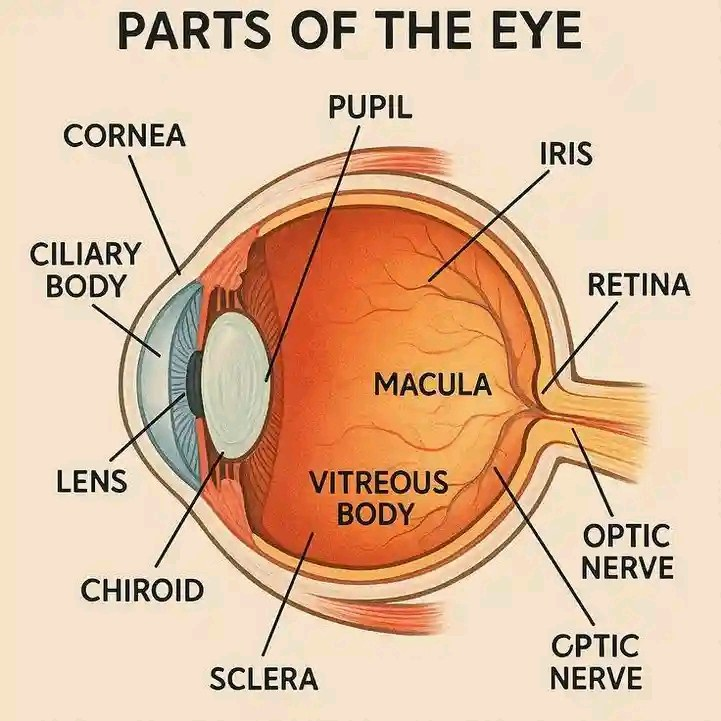
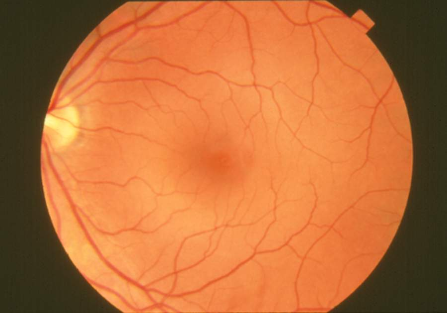
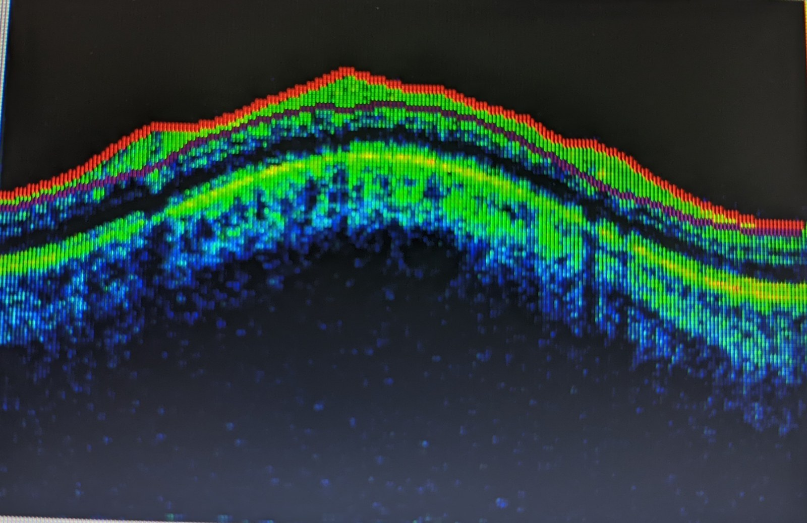

400 — Tổng quan Mắt & thị giác / Eye & visual pathway overview
Tags: tong-quan
Mức chắc chắn (certainty): tổng hợp y văn (literature synthesis).
Hình ảnh nền tảng (giải phẫu & phương thức)
Ba ảnh nền tảng để định hướng trước khi đọc các bài chi tiết: giải phẫu nhãn cầu → ảnh đáy mắt bình thường → OCT võng mạc bình thường.
| Giải phẫu nhãn cầu (anatomy) | Đáy mắt bình thường (fundus) | OCT võng mạc bình thường (macular OCT) |
|---|---|---|
 |
 |
 |
- Giải phẫu: nhãn cầu = giác mạc → tiền phòng → thuỷ tinh thể → dịch kính; thành sau gồm võng mạc (retina) – hắc mạc (choroid) – củng mạc (sclera); hoàng điểm (macula) ở cực sau, đĩa thị (optic disc) nơi các sợi trục và mạch trung tâm võng mạc ra vào.
- Đáy mắt bình thường: đĩa thị sáng, mạch xuất phát từ đĩa chia 4 hướng, hoàng điểm sẫm hơn (do biểu mô sắc tố dày), không xuất tiết/xuất huyết/đốm bông.
- OCT võng mạc (quang học đồng tiêu — Optical Coherence Tomography): cắt ngang võng mạc thành các lớp; lõm trung tâm (foveal depression) ở hoàng điểm là bình thường. OCT là chốt cho phù hoàng điểm, dịch dưới võng mạc, màng trước võng mạc, teo/lớp sợi thần kinh (RNFL). (Xem bài 441, 442.)
- Nguồn ảnh: Wikimedia Commons — CC0 (Aliyu Mohammed Aliyu), Public domain (NIH/NEI), CC BY-SA 4.0 (Bobjgalindo); chi tiết ở
images/CREDITS.md.
Bảng so sánh phân biệt bắt buộc (Mắt & thị giác)
| Mẫu hình (pattern) | Vị trí (location) | Gamut chính (DDx) | Phân biệt nhanh | Bài chi tiết |
|---|---|---|---|---|
| Cơ phì đại chừa gân | Hốc mắt (orbit) | Graves (TED) | Thân cơ to, gân bình thường | 421 |
| Cơ phì đại cả gân | Hốc mắt | Viêm giả u (pseudotumor), cellulitis | Cả gân + đau + đáp ứng steroid | 422 |
| Vỡ sàn + kẹt cơ | Hốc mắt | Blow-out, trapdoor trẻ em | Giọt lệ (teardrop), nhìn đôi dọc | 420 |
| Máu sau nhãn cầu | Hốc mắt | Hội chứng khoang (OCS) | Lồi mắt + IOP > 40 mmHg + canthotomy 2 giờ | 420 |
| Nhãn áp tăng NGAY sau tiêm nội nhãn (đỉnh 30 giây, hết trong 30 phút) | Tiền phòng – nhãn cầu (globe) | Đỉnh thể tích · thiếu tưới máu · tăng IOP kéo dài · viêm nội nhãn · bọt khí · xước giác mạc | IOP 39,2 ± 12,4 mmHg (< 1 phút), 79,7% ≥ 25 mmHg, về 17,7 ± 6,5 ở phút 30 = sinh lý**; **> 50 mmHg + thị lực sáng tối → chọc tiền phòng; đau tăng ngày 2–3 = viêm nội nhãn | 1465 |
| Bong võng mạc trắng đục + "màng che" sau tiêm nội nhãn | Võng mạc ngoại vi (vùng tiêm 3,5–4,0 mm) – hoàng điểm | IVARD · bong thanh dịch do bệnh nền/thuốc · bong co kéo · tách lớp võng mạc · bong hắc mạc | Lỗ rách thấy khi soi 360° + ấn sclera = IVARD; 0,02%/mũi anti-VEGF vs 0,134%/mũi implant DEX; 63,5% đã bong hoàng điểm, triệu chứng 6,5 ngày; OCT hoàng điểm bình thường không loại trừ | 1469 |
| Khối trắng–xám MỘT BÊN ở người lớn, không sẹo cũ kề bên (unilateral white retinal mass) | Võng mạc – dịch kính – hoàng điểm | Toxocariasis nội nhãn người lớn · toxoplasmosis · u hạt lao/sarcoid · melanoma hắc mạc · DUSN · di vật | U hạt 92,1% (cực sau 50,5%, ngoại vi 44,1%), di chuyển 16,1% = chốt; khuyết RNFL 53,2% vs 7,3%; IgE > 100 ở 69,6% nhưng ái toan chỉ 11,6%; IgG ≥ 0,250; Se IgE dịch ở người lớn chỉ 66,7% | 1464 |
| Nhãn áp tăng MUỘN sau xuất huyết dịch kính, mắt đã hết đỏ | Tiền phòng – góc tiền phòng – dịch kính | Tế bào ma (ghost cell) · hồng cầu tươi · tan máu · phacolytic · viêm · NVG · do corticoid | Tế bào nhỏ kaki + KHÔNG flare + góc mở = tế bào ma; flare/KP = viêm; tân mạch góc = NVG; tế bào to = thể thủy tinh; IOP đỉnh 46,5 ± 8,0 mmHg | 1457 |
| Khí trong hốc mắt (lạo xạo, sưng mi) | Hốc mắt – khoang ngoài nón – khe ổ mắt trên | Tràn khí đơn thuần · tràn khí căng/OCS · khí nội sọ · máu sau nhãn cầu · viêm mô tế bào sinh hơi | Khí −1.000 HU + IOP 28 → 48 mmHg/24 giờ + lồi mắt + căng thần kinh thị = tràn khí căng; khí dọc khe ổ mắt trên → xoang hang/nội sọ dù không gãy xương | 3105 |
| Sụp mi + liệt nhãn cầu tiến triển, không đau | Cơ vận nhãn + hệ dẫn truyền tim (EOM, heart) | KSS · CPEO · OPMD/OPDM · nhược cơ · TED · viêm cơ hốc mắt · tổn thương thân não | Khởi phát < 20 tuổi + sắc tố võng mạc + block dẫn truyền = KSS (1–3/100.000); teo EOM đối xứng trên MRI = myopathic; dao động + không teo = nhược cơ; thân cơ to chừa gân = TED | 498 |
| Vôi hóa trong nhãn cầu | Nhãn cầu (globe) | Retinoblastoma (trẻ), drusen đĩa thị, osteoma hắc mạc, phthisis bulbi (người lớn) | Tuổi + vôi hóa thô (RB) / vôi hóa đĩa (drusen) / xương trong hắc mạc (osteoma) | 412 |
| Cơ cả gân/viêm | Hốc mắt | Giả u, cellulitis, IgG4 | Đau + cả gân + steroid 48h | 422 |
| Mạch xoang hang | Xoang hang | Fistula, huyết khối | Tiếng thổi + SOV giãn | 423 |
| Tuyến lệ to | Trên-ngoài | IgG4, sarcoid, u | Không đau 2 bên + IgG4 | 424 |
| TK thị/giao thoa | TK-yên | Viêm, NAION, glioma/ONSM, adenoma | Đau + ngấm = viêm; tram-track = ONSM; bán manh = yên | 430, 431, 432 |
| ON tái phát/phụ thuộc steroid | Thần kinh thị (optic nerve) | CRION · MOG-ON · AQP4-ON · MS-ON · double-negative ON · NAION · độc–chuyển hóa | Ngấm dài ≥ 1/2 TK thị + AQP4 âm + tái phát khi giảm steroid = CRION; MOG-IgG (+) + đĩa phù + perineural = MOG-ON; AQP4 (+) + dài/chiasm + area postrema = NMOSD; ổ ngắn + OCB (+) + tổn thương não = MS | 464, 430, 434 |
| Đĩa thị | Đĩa thị (disc) | Phù đĩa, drusen, IIH | Frisén 0–5; lõi tối = drusen | 433 |
| Hắc mạc quanh đĩa dày + dịch TRONG võng mạc từ bờ đĩa | Đĩa thị – hắc mạc quanh đĩa – hoàng điểm mũi | PPS · CSCR lan quanh đĩa · phù đĩa thị/IIH · NAION · drusen đĩa · CNV quanh đĩa · hố đĩa thị | Túi dịch quanh đĩa + hắc mạc > 300 µm + PPA 100% + FA không rỉ = PPS; RNFL dày + đau đầu + áp lực mở > 25 cm CSF = phù đĩa thị; mạng CNV trên OCTA = CNV | 405 |
| Teo thị 2 bên | Thần kinh thị (optic nerve) | LHON, độc–chuyển hóa, viêm, di truyền (DOA/Wolfram), chèn ép | GCL mất sớm = LHON; RNFL thái dương mỏng = độc chất/DOA; teo thị + DM/điếc/ĐTĐ nhạt = Wolfram | 434, 439 |
| Teo thị 2 bên + ĐIẾC (DOA+/WFS1 trội) | Thần kinh thị (optic nerve) + võng mạc + tai trong | OPA1/DOA+ vs WFS1 trội (Wolfram-like) vs WS1 lặn (DIDMOAD) vs LHON vs độc chất vs glaucoma | Điếc xuất hiện TRƯỚC teo thị (WFS1: 2 vs 10 tuổi) = WFS1; ANSD (ABR mất sóng + CM còn) + missense GTPase = OPA1; OPL lamination trên OCT = WFS1 trội | 437 |
| VUS ở OPA1/WFS1 | Thần kinh thị + tai trong | VUS ≠ bệnh, VUS ≠ lành: OPA1 (AD), WFS1 (AR/AD), OTOF/AIFM1 (AN), đa hình lành | PM2 + PP3 chỉ 2 điểm (VUS); cần phân ly (PP1), de novo (PS2), chức năng (PS3); 2 biến thể P/LP mới phân độ được Wolfram | 479 |
| ĐTĐ sơ sinh + điếc + đục thể thủy tinh | Thần kinh thị + tai trong + tụy + thể thủy tinh | Hattersley–Urano (WFS1 trội nặng) · Wolfram lặn · ĐTĐ sơ sinh kênh KATP · rubella/CMV bẩm sinh · m.3243A>G | Tam chứng sơ sinh + một biến thể WFS1 missense = Hattersley–Urano; đái tháo nhạt + 2 biến thể LOF = Wolfram lặn; OPL lamination + điếc trước teo thị = WFS1 trội | 499 |
| Người mang OPA1 không triệu chứng | Thần kinh thị (RGC) | OPA1 độ thấm không hoàn toàn (~70%) · LHON carrier · WFS1 trội · drusen đĩa thị · glaucoma · chèn ép thị thần kinh | RNFL/GCL thái dương mỏng dù VA 20/20 + phân ly gia đình = OPA1 dưới lâm sàng; drusen "lumpy bumpy" + siêu âm tăng âm = giả teo thị; mất theo vùng + lõm đĩa = glaucoma | 1627 |
| Phù đĩa thị thiếu máu cấp (> 50 tuổi) | Thần kinh thị (optic nerve) | AAION (GCA) vs NAION vs viêm thị, PION, CRAO | Đĩa nhợt trắng phấn + đốm bông + 2 bên + đau hàm → GCA (cấp cứu steroid); đĩa sung huyết + disc-at-risk mắt lành → NAION (không steroid) | 435 |
| Sau NAION: mắt đối diện, tái phát, tiến triển | Thần kinh thị (optic nerve) | NAION tiến triển · NAION mắt đối diện (15–24%/5 năm) · tái phát cùng mắt (3–8%) · AION do GCA · NAION do GLP-1 RA | C/D nhỏ đối xứng + mất thị lực không đau lần nữa = mắt đối diện; xấu thêm 7–14 ngày = thể tiến triển (loại trừ GCA); thuốc GLP-1 khởi đầu < 12 tháng = nguy cơ do thuốc | 480 |
| Thành mạch lớn dày / hẹp | ĐMC & nhánh (aorta/branches) | TAK (< 40/≤ 60) vs GCA (≥ 50) (C-GCA/LV-GCA), aortitis nhiễm khuẩn, xơ vữa, loạn sản cơ–xơ | "Macaroni" tăng âm = TAK vs "halo" giảm hồi âm = GCA; tuổi là chốt; PET = hoạt tính viêm | 436 |
| Biến chứng mạch lớn GCA / aortitis | ĐMC & nhánh (aorta/branches) | Theo dõi dài hạn: phình/tách thành ĐMC ngực, hẹp mạch, aortitis nhiễm khuẩn (loại trừ), hở van ĐMC | Hoạt tính (FDG-PET, đảo ngược) tách rời tổn hại cấu trúc (CTA/MRA, tiến triển); hết viêm KHÔNG hết nguy cơ; ĐMC ngực HR 13,46; GC tích lũy = độc tính | 438 |
| Tắc mạch võng mạc | Võng mạc (retina) | CRVO/BRVO, CRAO | Cherry-red + giờ vàng < 4–6 giờ | 444 · 276 |
| Trắng đục lan tỏa KHÔNG có điểm đỏ anh đào | Võng mạc + hắc mạc + đoạn trước | OAO · CRAO · tắc động mạch mi sau (Amalric) · OIS · viêm màng bồ đào cấp | Không điểm đỏ + OCT mất cả lớp ngoài + hắc mạc không đổ đầy = OAO; tam giác ngoại vi = Amalric | 278 |
| Đáy mắt gần bình thường + ám điểm cạnh trung tâm | Hoàng điểm – lớp nhân trong (INL) | PAMM · AMN · đốm bông · phù hoàng điểm · Purtscher | Dải tăng phản xạ INL + EZ/IZ nguyên = PAMM; OPL/ONL + đứt EZ/IZ = AMN | 279 · 441 |
| Bong võng mạc | Võng mạc (retina) | Rách, co kéo, tiết dịch, PVR | Macula-on 24 giờ; V/Y dính đĩa | 445 |
| Bong võng mạc SAU xạ trị u nội nhãn | Võng mạc – hắc mạc (retina–choroid) | Thanh dịch do u hoạt động · TRLE (rò lipid) · bong co kéo · lỗ rách do teo xạ · tràn dịch hắc mạc · tái phát u "giả bong" | U dày lên/mất hollow = u hoạt động → xạ lại; u phẳng + lipid = TRLE → anti-VEGF; màng co kéo/lỗ rách + đe dọa hoàng điểm = PPV; B-scan trước mọi ca | 1441 |
| Mủ tiền phòng + bất thường thấu kính | Thể thủy tinh – tiền phòng (lens – AC) | Phacoantigenic (bao vỡ) · phacolytic (bao nguyên) · lens particle · phacomorphic · viêm nội nhãn · TASS · SO | Tìm vật liệu thấu kính = chốt; cấy âm + mắt bên yên; IOP có thể bình thường lúc đầu → đo lại; không bỏ mắt khi chưa loại trừ SO | 1443 |
| Viêm tiền phòng MỘT BÊN sau chấn thương kín | Tiền phòng – mống mắt – thể mi (AC – iris – ciliary body) | Viêm do chấn thương (lành tính) · SO khởi phát sớm · viêm nội nhãn (nếu xuyên thấu) · viêm do thấu kính · góc lõm · tách thể mi | Một bên + rách cơ vòng mống mắt + khởi phát 1–3 ngày = viêm do chấn thương; hai bên/u hạt = SO (khám mắt kia mỗi lần); soi góc sau khi máu tan: ~50% trẻ có máu tiền phòng có góc lõm; tái chảy máu tới 38% trong tuần đầu | 1444 |
| Đau mắt nhiều hơn tổn thương + viêm thần kinh tỏa tia ở người đeo kính tiếp xúc | Giác mạc – biểu mô đáy → nhu mô → thần kinh (cornea) | Acanthamoeba · herpes (đuôi gai bóng tận cùng) · nấm sợi (bờ lông vũ + vệ tinh) · vi khuẩn (mủ đặc, giờ) · Pythium · độc tố dung dịch kính | Viêm thần kinh tỏa tia 46,2% (chỉ tồn tại ~13 ngày; viêm quanh thần kinh 91,9% trong 7 ngày đầu) + vòng Wessely 53,8% + mảng nội mô 69,2%; IVCM nang vách đôi 10–25 µm ở biểu mô đáy, Se 94%/Sp 87%; chẩn đoán ≤ 14 ngày OR 19,78, 23,5% mất mắt; corticoid trước chẩn đoán = melting | 1472 |
| Loét giác mạc "kháng nấm" + tua, chấm nội nhu mô, rãnh ngoại vi | Giác mạc – nhu mô + rìa (cornea – stroma – limbus) | Pythium insidiosum (oomycete, không ergosterol) · nấm sợi (bờ lông vũ, vệ tinh) · Acanthamoeba · Pseudomonas · HSV | ≥ 2 trong 5 dấu hiệu T–D–R–F–L → nghi Pythium (AUC 0,896, dương tính giả 1,4%); kháng nấm MIC > 128 µg/mL vs azithromycin 8 / doxycycline 4 µg/mL; cấy thạch máu (Sabouraud dễ âm giả) + PCR ITS; linezolid 0,2% + azithromycin 1% mỗi giờ, ghép khi lan rìa | 3200 |
| Chấm/trợt biểu mô đa ổ dai dẳng, cấy âm, rìa fluorescein dương | Giác mạc – biểu mô / nhu mô (epithelium – stroma) | Microsporidia (MKC/MSK) · HSV không điển hình · nấm · Acanthamoeba · Pythium · SPK do khô/độc tố | Nhuộm modified trichrome 78,6% / ZN 89,5% / calcofluor + IVCM thấy vỏ kép phản xạ mạnh; cấy âm KHÔNG loại trừ; MKC (nông, PHMB 0,02% lành 90%) vs MSK (nhu mô, 9 tháng, ghép 18/21) | 3202 |
| Sẹo trắng khu trú, mắt không đỏ — ghép loại nào? | Giác mạc – nhu mô / Descemet / nội mô (stroma – endothelium) | Sẹo nông · sẹo sâu · phù nội mô · loạn dưỡng · band keratopathy · loạn sản bẩm sinh | AS-OCT đo độ sâu: ≤ 100 µm → PTK; 100–200 µm → SALK; > 200 µm + ECD > 1.000 → DALK; toàn bề dày/ECD < 1.000 → PKP; chỉ nội mô → DSEK/DMEK; sẹo "yên" vẫn viêm mô học (thải 56% vs 33%) | 3201 |
| Bỏng hóa chất + mất mạch rìa (limbal ischemia) | Giác mạc – rìa – kết mạc (cornea – limbus – conjunctiva) | Bỏng kiềm · bỏng acid/HF · bỏng nhiệt · SJS/TEN · hạt vôi còn sót · viêm giác mạc HSV | Số giờ rìa thiếu máu quyết định tiên lượng, không phải độ đục: < 1/3 = Roper–Hall II**, **1/3–1/2 = III**, **> 1/2 = IV; Dua > 9–< 12 giờ = V, 12 giờ = VI; pH < 6,5 hoặc > 7,5 dự báo LSCD; rửa đến pH ≈ 7, đo lại tới 1 giờ, lật mi lấy hạt; corticoid 7–10 ngày, AMT trong 2 tuần | 1456 |
| Bong võng mạc SAU viêm nội nhãn | Võng mạc–dịch kính (retina–vitreous) | Lỗ hoại tử (RRD) vs màng xơ co kéo (TRD/PVR) vs bong tiết dịch vs bong hắc mạc giả RD | Màng dính đĩa + aftermovement = võng mạc; lỗ đúng ổ chorioretinitis cũ + bong trong ngày = lỗ hoại tử; aphakia p = 0,014 / dính đồng tử sau p = 0,023; bong 14,8%, trung vị 27 ngày, 81,3% < 2 tháng, bỏ mắt 31,3% | 1402 |
| Lỗ hoàng điểm thứ phát sau mổ bong võng mạc/ROP | Hoàng điểm – dịch kính (macula – vitreous) | Lỗ thật (ILM mất, bờ teo) vs pseudohole/lamellar hole vs lỗ co kéo do PVR vs lỗ do chấn thương | ILM đã bóc + bờ teo + dầu silicone = không thể vạt ILM → màng ối/ART; đóng 91–100% nhưng cải thiện thị lực chỉ 66% ở lỗ tái phát; OCT type 1 vs type 2 | 1429 |
| Phù hoàng điểm viêm | Hoàng điểm (macula) | Uveitic CME vs DME | Anti-VEGF thất bại 3 mũi → steroid | 446 |
| Phù hoàng điểm sau phacovitrectomy trên mắt BƠM DẦU | Hoàng điểm – INL/Henle (macula) | CME thật (Irvine–Gass) · dầu trong võng mạc (khoang giả) · co kéo ERM/PVR · dịch dưới võng mạc · thiếu máu hoàng điểm | Nang giảm hồi âm đều ở INL + khởi phát 28,83 ± 9,22 ngày = CME → lấy dầu giúp 411 → 267 µm trong 3 ngày; có đốm tăng hồi âm + tăng hồi âm lớp sâu + dầu 5.000 cSt/đã bóc ILM = dầu trong võng mạc, KHÔNG tiêm lặp; tiêm trong dầu chỉ đạt 488 → 396 µm với 8,25 mũi | 1875 |
| Trục quang mờ lại sau phaco trên mắt bơm dầu (PCO) | Bao sau – bao trước – IOL – tiền phòng | PCO màng xơ/Elschnig · xơ co bao trước · đục mặt trước IOL · dầu nhũ tương/màng dầu · dầu tiền phòng | Màng SAU IOL + bờ tới xích đạo = PCO → YAG (3,5–4,5 mm, năng lượng thấp); màng DỪNG ở bờ haptic = đục IOL (YAG vô ích); vòng bao trước co = mở bao bằng mổ; bọt dầu ở bờ đồng tử + tiền phòng nông = dầu tiền phòng, IOP tới 67 mmHg; YAG sau phacovitrectomy: 27,41% phải YAG/6 năm, bong võng mạc 1,39%/12 tháng | 1873 |
| Mất thị lực KHÔNG đau + bong vòm hoàng điểm | Hoàng điểm – hắc mạc (macula – choroid) | CSCR (do corticosteroid/nội sinh) vs CNV/AMD vs PICCP/VKH vs NAION vs HCQ | Rà soát corticosteroid mọi đường + OCT bong vòm + FA rò điểm + ICGA tăng thấm = CSCR; ICGA giảm tưới máu = viêm hắc mạc mao mạch; dịch mới ở bệnh nhân uveitis đang dùng steroid KHÔNG được tăng steroid | 470 |
| SRF dai dẳng + hắc mạc dày + KHÔNG drusen | Hoàng điểm – hắc mạc (macula – choroid) | CSCR hoạt động · PNV (type 1 MNV) · PCV · nAMD drusen-driven · PPE | SIRE/dấu hai lớp + OCTA có mạng mạch dưới RPE = PNV → anti-VEGF; OCTA âm = CSCR → half-dose PDT; polyp trên ICGA = PCV → anti-VEGF + PDT; 16% PNV có SCT < 200 µm nên hắc mạc mỏng không loại trừ | 482 |
| Dịch/ PED "nằm thấp" trên nền loạn dưỡng hoa văn (PRPH2) | Hoàng điểm – võng mạc ngoài – hắc mạc | CNV type 1/2 trên PRPH2 · vật liệu vitelliform · teo RPE tiến triển · foveal crack sign · AMD thể tân mạch (bệnh giả) | FAF hình cánh bướm/ hình trứng đối xứng + khởi phát < 50 tuổi = PRPH2, không phải AMD; OCTA có flow dưới RPE = CNV kể cả khi KHÔNG dịch → anti-VEGF; không flow = vật liệu/ teo → theo dõi; foveal crack sign: không flow, không tiêm; CNV ở PRPH2 3–17% tùy đoàn hệ | 1407 |
| Phù hoàng điểm ở mắt ĐÃ XẠ TRỊ | Hoàng điểm – đĩa thị (macula – optic disc) | Bệnh hoàng điểm do xạ · tái phát u · RON · ĐTĐ · CRVO/BRVO · thiếu máu mắt | Tổn thương khớp bản đồ liều + không dày u trên siêu âm = do xạ → anti-VEGF; kháng ≥ 3 mũi → implant DEX 0,7 mg/FAc 0,19 mg (EZ còn nguyên mới có lợi ích chức năng); u dày lên/dịch trên u = tái phát → điều trị u; ngấm thuốc đầu dây thần kinh thị trên MRI = RON; 45–55 Gy vào ≥ 1/2 võng mạc → RR 53%; 20 Gy/2 lần × 10 Gy vẫn gây RON sau 18 tháng; EZ nguyên vẹn +6,4 chữ vs teo RPE −11,7 chữ | 1409, 1418 |
| Trẻ sau xạ trị u não/retinoblastoma có tổn thương mới | Võng mạc – hoàng điểm ở trẻ | Bệnh võng mạc do xạ · tái phát retinoblastoma · xuất huyết sau xạ · trắng mạch thoáng qua · Coats-like | Khối đặc/tăng kích thước = tái phát; phù nang + mạch khớp bản đồ liều = do xạ; OCTA còn dòng = trắng mạch thoáng qua, không đốt; 23,4 Gy/13 lần vẫn gây trắng mạch thoáng qua; plaque 45 Gy → bệnh võng mạc do xạ 15%, xuất huyết u 30% | 1419, 1458 |
| Mù KHÔNG đau sau xạ vùng trên yên/hốc mắt, RAPD (+) | Dây thị – giao thoa (optic nerve – chiasm) | RION · tái phát u tại giao thoa · viêm thị do ICI · NAION/AION · teo thị do glôcôm sau xạ | Ngấm thuốc đối xứng, dừng ở ranh giới liều, Dmax dây thị > 50 Gy, tiềm tàng 3 tháng–3 năm = RION; khối lệch bên lớn dần + nang/vôi = tái phát; ngấm vỏ dây thị + đau khi liếc + đang anti-PD1 = ICI; PENTEC 57 Gy → 5%, 64 Gy → 50%; trẻ u cơ vân RION chỉ khi Dmax > 53 GyEQD2 | 1458 |
| Đồng tử trắng ở trẻ RB ĐÃ điều trị | Thể thủy tinh – dịch kính (lens – vitreous) | Đục do xạ · đục do melphalan IAC/tiêm nội nhãn · đục do corticoid · tái phát RB/seeds · bong võng mạc tiết dịch | PSC hạt/vacuole, không khối, tiềm tàng 1–5 năm = đục; B-scan có khối/canxi/seeds = tái phát (KHÔNG mổ đục); 5 chu kỳ IAC + 9 tháng = melphalan; PENTEC 9 Gy → 50% đục | 1459 |
| Lác ở trẻ sinh non/ROP — quyết định mổ | Cơ vận nhãn (extraocular muscles) | Lác trong sơ sinh, lác điều tiết, lác cảm giác/ROP, giả lác ngoài do hoàng điểm lệch, lác ngoài gián đoạn | Cover test là chốt (Hirschberg "ngoài" + cover test "trong" = giả lác ngoài); khúc xạ lý liệt + đeo kính 6–8 tuần trước khi mổ; mổ hai mắt ưu tiên (mổ một mắt OR 6,49–7,20 tái mổ); ROP phải ổn định trước mổ | 472 |
| Lác ngoài THỨ PHÁT sau mổ lác trong | Cơ vận nhãn + thị giác hai mắt | CXT muộn do sẹo giãn · tụt/mất cơ MR · CXT "tự phát" ở lác trong điều tiết · lác cảm giác · lác ngoài ở bại não · Duane đã mổ | Thành công động học 95,9% (1 năm) → 54,9% (10 năm), trung vị 130 tháng, 14,0% quá chỉnh; khép hạn chế + góc ngoài ≥ 15 PD sau ≥ 6 tháng = CXT cơ học → đưa MR ra trước (1 mm ≈ 3,5 PD); khép đầy đủ + ≤ 20 PD → over-minus 8–12 tuần; xuất hiện ≤ 2 tuần + khép −3/−4 = tụt cơ → MRI + mổ lại sớm | 1405 |
| Đo khúc xạ ở trẻ Down/bại não/tự kỷ | Hệ thị giác trẻ có nhu cầu đặc biệt | Loạn thị ở Down (70,3%) · keratoconus ở Down (15% mắt 9–18 tuổi) · viễn thị cao ở bại não/chậm phát triển · sai số thiết bị ở tự kỷ | Down/rối loạn TKTW → tropicamide 1% thay cyclopentolate; đồng tử ≥ 6 mm + mất phản xạ sáng mới đọc; bias Retinomax−Plusoptix −2,12 D trước, −1,37 D sau lý liệt → không thay thế máy; CCT 479 µm/Kmax 49,2 D ở Down = nghi keratoconus → tomography + CXL | 1412 |
| Keratoconus ở trẻ Down — sàng lọc & theo dõi | Giác mạc (cornea) | Nền mỏng–dốc đối xứng của nhóm · keratoconus sớm (lệch khu trú) · keratoglobus · pellucid · biến dạng do kính/dụi mắt · hydrops | Nền Down: CCT 479 µm, Kmax 49,2 D, BAD-D 2,5 → một tham số KHÔNG đủ, cần ≥ 3/4 (Kmax > 48 D · IS > 1,4 · BAD-D > 1,6 · độ cao sau > 10 µm); tiến triển > 1 D/năm → CXL epi-off dưới gây mê; ghép DALK sống 67–85% | 1414 |
| VKC + keratoconus ở trẻ — CXL quanh viêm | Kết mạc sụn mi/rìa – giác mạc | VKC thể sụn mi · thể rìa · loét khiên · keratoconus · glôcôm do corticoid · GPC do kính | KC trong VKC tới 26,8%, bất thường tomography tới 71%; viêm hoạt động = chống chỉ định CXL; VKC đã kiểm soát: K steep −2,02 D sau 12 tháng, 3/38 mắt thấm vô khuẩn; Bonini 0–4; trẻ dùng dexamethasone: 82,2% tăng IOP, +10 mmHg | 1451 |
| Đốm trắng võng mạc | Võng mạc–hắc mạc | MEWDS, AZOOR, PIC, serpiginous | FAF đốm sáng tự khỏi vs bờ lan | 447 |
| Viêm hoại tử võng mạc | Võng mạc (retina) | ARN, CMV retinitis, PORN | Vitritis ↔ mức miễn dịch; PCR dịch nội nhãn | 452 |
| Viêm mạch võng mạc (bệnh hệ thống) | Võng mạc (retina) | Behçet vs lupus (SLE), sarcoid, ARN/CMV, lymphoma masquerade | Vitritis + thoát thuốc "dương xỉ" trên FFA = Behçet; đốm bông + SLEDAI cao, ít vitritis = lupus | 455 |
| Viêm võng mạc–màng mạch suy giảm miễn dịch KHÔNG HIV | Võng mạc (retina) | CMV sau ghép/ung thư máu/thuốc ức chế miễn dịch | Viêm nhiều hơn HIV (dễ nhầm ARN); PCR máu có thể âm → PCR dịch tiền phòng; tái phát → tìm u lympho ẩn | 454 |
| Theo dõi & tái hoạt CMV retinitis sau ghép | Võng mạc (retina) | Tái hoạt muộn, IRU, bong võng mạc; ngừng kháng virus | Tái hoạt = tiến triển so ảnh UWF nền tảng (không phải sẹo cũ); HIV ngừng khi ≥ 3 tháng điều trị + lành + CD4 ≥ 100 ≥ 3 tháng trên ART; không HIV không có ngưỡng CD4 phổ quát | 459 |
| Viêm dịch kính mạn ở người lớn tuổi (giả uveitis) | Võng mạc–dịch kính (retina–vitreous) ± CNS | U lympho nội nhãn (PVRL) vs viêm màng bồ đào (trung gian, giang mai, lao, MFC), nấm, amyloidosis | Ổ vàng–kem dưới RPE + đục dịch kính ít viêm + hai mắt ở tuổi > 60, đáp ứng corticoid một phần rồi tái phát → sinh thiết dịch kính; chốt IL-10 dịch kính > 400 pg/mL, IL-10:IL-6 > 1, MYD88 L265P | 462 |
| Nhiễm trùng nội nhãn nội sinh (nấm) | Võng mạc–dịch kính (retina–vitreous) | Nấm (Candida/Aspergillus) vs vi khuẩn nội sinh (Klebsiella) vs CMV/ARN vs u lympho (masquerade) | "Fluff ball"/"quả cầu tuyết"/"chuỗi ngọc trai" + bối cảnh candidemia/catheter/TPN/ICU/giảm bạch cầu hạt; phần lớn KHÔNG triệu chứng → soi đáy mắt bắt buộc, cấy/PCR dịch kính; corticoid nội nhãn = chống chỉ định | 463 |
| Chọn kháng nấm theo loài & kháng sinh đồ | Dịch kính–võng mạc (vitreous–retina) | Candida vs Aspergillus vs Fusarium vs Mucorales vs nấm sẫm màu | Loài quyết định thuốc: Candida → fluconazole/voriconazole/echinocandin; Aspergillus → voriconazole + cắt dịch kính sớm; Fusarium → natamycin + voriconazole, echinocandin VÔ HIỆU; rezafungin/ibrexafungerp không tác dụng với Fusarium | 474 |
| Viêm màng bồ đào giả danh do u lympho T/NK hoặc u lympho thứ phát | Võng mạc–dịch kính–hắc mạc–thể mi | ENKTL (T/NK) vs PVRL tế bào B vs u lympho thứ phát vs melanoma hắc mạc vs viêm màng bồ đào | IL-10:IL-6 < 1 ở 71% u lympho T → KHÔNG loại trừ bằng IL-10; chốt EBER/EBV DNA + CD56/TIA-1/GrB; dày hắc mạc 2,8–3,2 mm = nghĩ u lympho thứ phát (kể cả sau 5 năm) | 473 |
| Viêm tiền phòng–dịch kính sau mổ/tiêm: TASS vs nấm ngoại sinh | Tiền phòng → dịch kính; ổ cố định trên IOL/bao thể thủy tinh | TASS vs nấm ngoại sinh vs vi khuẩn nội nhãn vs P. acnes vs tồn dư vỏ thể thủy tinh | 12–48 giờ + phù limbus-to-limbus + KHÔNG viêm dịch kính + cấy âm + đáp ứng corticoid = TASS; > 2 tuần + sợi/tia trên IOL + cấy/PCR nấm = ngoại sinh (cấy dương chỉ 13,8%); lấy IOL khi ổ còn trên IOL | 495 |
| Điều trị u lympho T/NK nội nhãn | Dịch kính–võng mạc + bệnh hệ thống mũi–họng | ENKTL vs PVRL tế bào B vs viêm màng bồ đào vs CMV retinitis | Asparaginase là trục (CHOP CR ~30%): DDGP OS 5 năm 74,3% vs SMILE 51,7%; MTX nội nhãn 400 µg → lui bệnh mắt 82,4%; EBV DNA < 3.255 copies/mL; allo-HSCT R/R OS 2 năm 57,6% | 496 |
| Chọn thuốc & phác đồ anti-VEGF cho ROP | Võng mạc (retina) | Bevacizumab vs ranibizumab vs aflibercept vs conbercept vs laser | Zone I/A-ROP → anti-VEGF (thuốc dai, liều thấp); IR: IVB 11% · IVC 16% · IVR/IVA 27%; khoảng tái điều trị BCZ 6,7 tuần > RBZ 3,1 tuần; RD gộp 1,4% | 461 |
| Mù bẩm sinh + điếc ở trẻ trai (Norrie) | Võng mạc + tai trong (retina & inner ear) | Norrie (NDP, X-linked lặn) vs FEVR/IP/Coats/RB | Nam đủ tháng + bong võng mạc hai bên + điếc tiến triển + chậm phát triển; mẹ mang gen → con trai 50% mắc; xét gen NDP + chẩn đoán trước sinh | 467 |
| Tổn thương võng mạc ngoài do thuốc (ngoài HCQ) | Võng mạc (retina) | Tamoxifen (nang giả + mất EZ) · clofazimine (tinh thể + mắt bò) · deferoxamine/quá tải sắt (teo võng mạc ngoài + FAF đốm) · ức chế MEK (MEKAR) vs HCQ, MacTel 2, CSCR | MEKAR = bong thanh dịch hai bên đối xứng, không nâng RPE, hắc mạc bình thường, KHÔNG ngừng thuốc ung thư; tamoxifen = nang giả hoàng điểm + OCTA bình thường; clofazimine = ám điểm trước khi đáy mắt đổi; teo + FAF đốm = đối chiếu ferritin | 487 |
| HCQ trong thai kỳ & cho con bú | Võng mạc (retina) + mẹ–thai | HCQ retinopathy vs tiền sản giật/PRES vs CSCR vs IIH vs tắc mạch (tăng đông) vs ĐTĐ | Thai kỳ KHÔNG tăng tốc độc tính → giữ HCQ suốt thai (EULAR 2024/ACR 2020); mờ mắt + HA/protein niệu = nghĩ tiền sản giật trước; nồng độ ≤ 500 ng/mL gắn bùng phát nặng (không phải độc tính) | 488 |
| Theo dõi & tái phát PVRL (tiến triển CNS) | Võng mạc–dịch kính ± CNS | Tái phát nội nhãn vs độc tính MTX (keratopathy 41,2%) vs bệnh võng mạc do xạ vs nhiễm trùng vs sẹo RPE không hoạt động vs "nơi trú ẩn" quanh implant | Mắt sạch KHÔNG loại trừ CNS: 60–90% tiến triển CNS, ~1/3 đã có CNS lúc chẩn đoán; MRI não có gadolinium mỗi 4–6 tháng; IL-10 âm tính hóa < 10 pg/mL; tổn dư OCT bất biến = sẹo, không phải tái phát | 491 |
| Triệu chứng thần kinh/thị giác MỚI sau điều trị u lympho nội nhãn | Chất trắng não (trung tâm bán bầu dục, vành tia, quanh não thất) ± đường thị giác | MTX leukoencephalopathy vs tái phát PCNSL vs PML vs hoại tử phóng xạ vs PRES vs nhồi máu | DWI sáng + ADC TỐI + KHÔNG ngấm + không hiệu ứng khối = độc tính MTX; tLE tích luỹ 15,1% (6 tháng) – 29,2% (2 năm) – 32,0% (5 năm), IT MTX HR 4,50, trung vị 3,0 tháng; tái phát = khối ngấm + hiệu ứng khối | 494, 491, 462, 213 |
| Suy giảm nhận thức sau điều trị PCNSL/PVRL | Chất trắng trán–đỉnh + mạng nhận thức | Di chứng MTX/tLE vs tái phát u vs xạ vs trầm cảm–mệt mỏi vs suy giáp/OSA | 8/33 suy giảm dù không than phiền; IPCG z ≤ −1,5; giảm > 1 z = có ý nghĩa; MoCA < 26 dương tính giả cao; ổ ngấm mới = tái phát | 1421 |
| Sinh thiết nội nhãn & xử lý mẫu | Dịch kính, võng mạc, hắc mạc | Chọc hút tiền phòng vs chọc hút dịch kính vs PPV chẩn đoán vs FNAB võng mạc 41G vs sinh thiết hắc–võng mạc | Mẫu nguyên chất 0,5–1,0 mL TRƯỚC infusion (pha loãng → cytokine thấp giả tạo); 23G/25G, không 27G (27G giảm sống sót tế bào u); nộp toàn bộ cassette: tế bào học 75% → 92%; ly tâm 500 × g/5 phút | 492 |
| Viêm nội nhãn nội sinh do VI KHUẨN (Klebsiella/S. aureus) | Hắc mạc–võng mạc → dịch kính; ổ nhiễm ngoài mắt: gan, tim, đường niệu, catheter | Klebsiella (áp-xe gan) vs S. aureus/Streptococcus (endocarditis/catheter) vs nấm (463) vs PVRL (462) vs ARN/CMV | Ổ MỦ DƯỚI VÕNG MẠC lớn + tiến triển giờ–ngày + đái tháo đường/áp-xe gan; tiền phòng có thể CHỈ hypopyon nhẹ → soi đáy mắt, tiêm nội nhãn ngay; CT: áp-xe thùy trái/hai thùy + xâm lấn tĩnh mạch gan (OR 148) | 475 |
| Thứ tự can thiệp khi áp-xe gan KÈM viêm nội nhãn | Hắc mạc–võng mạc–dịch kính + gan | Tiêm nội nhãn trước/đồng thời vs dẫn lưu gan trước vs chờ cấy vs chờ 24 giờ | Cửa sổ 48 giờ; tiêm nội nhãn ≤ 48 giờ; dẫn lưu gan SONG SONG nếu ổ > 5 cm; cắt dịch kính khi mủ đặc che đĩa thị hoặc xấu sau 24 giờ; 31% đạt CF, 31% NLP | 1420 |
| Viêm nội nhãn CẤP sau tiêm nội nhãn | Tiền phòng → dịch kính | Nhiễm khuẩn (Staph/Strep) · vô khuẩn–độc · nấm muộn · bùng phát viêm màng bồ đào | < 24 giờ + đau ít + cấy âm = vô khuẩn; 1–7 ngày + mủ + đau = nhiễm; 0,033–0,081%/mũi tiêm; implant dexamethasone 0,125% vs anti-VEGF 0,033%; B-scan: màng dịch kính 70%, bong võng mạc 8%; EVS: PPV khi LP, HM trở lên chọc–tiêm tương đương | 1425 |
| Mắt đỏ sau tiêm nội nhãn ở người dùng thuốc chống đông/kháng kết tập tiểu cầu | Kết mạc → tiền phòng → dịch kính | SCH lành tính · hyphema · xuất huyết dịch kính đột phá · xuất huyết hắc mạc · viêm nội nhãn | SCH đơn thuần + thị lực không đổi = TIẾP TỤC thuốc; 3.106 mũi: 0 biến chứng xuất huyết (warfarin 548, clopidogrel 523, aspirin 1.254); hyphema 1/10.000; đau + mủ + viêm dịch kính = viêm nội nhãn, không phải "chỉ là máu" | 1449 |
| Viêm nội nhãn TÁI PHÁT / KHÔNG đáp ứng | Tiền phòng → dịch kính → implant/vỏ bao | Ổ kín/fibrin · kháng vancomycin (VRE/VRSA) · biofilm trên implant/IOL · nấm · masquerade | Không giảm sau 48–72 giờ hoặc mủ quay lại = kiểm soát ổ thất bại → PPV; cấy âm 37–44% (lần hai còn thấp hơn); kháng vancomycin 11,1% ca cấy dương, 100% đa kháng; implant DEX: khởi phát 33 ngày, tái phát 20 ngày sau PPV; dexamethasone nội nhãn: 265 mắt, không lợi ích thị lực | 1426 |
| Hai mắt cùng viêm/giảm thị lực sau tiêm HAI MẮT CÙNG NGÀY | Tiền phòng + dịch kính hai bên (đối xứng) | Viêm vô khuẩn do thuốc/lô · nhiễm khuẩn từ lọ/lô · TASS · tăng IOP cấp · xuất huyết dưới kết mạc · bùng phát uveitis · bong võng mạc | Đối xứng + kết mạc yên + đau ít + mủ không đặc = vô khuẩn (aflibercept 8 mg: 3,7%/mũi); mủ đặc + đau tăng + cùng lô = nhiễm khuẩn → cấy + kháng sinh nội nhãn CẢ HAI MẮT + cách ly lô; nguy cơ mỗi buổi = 2 × mỗi mũi; 69.239 buổi/138.478 mũi: 0 ca hai bên, 33 ca một mắt (0–0,53%/mũi) | 1427 |
| Tăng nhãn áp sau tiêm/implant CORTICOID nội nhãn | Bè củng mạc – góc tiền phòng ± dịch kính | Steroid response · implant lạc tiền phòng · viêm bè · thể keo tồn lưu · glaucoma tân mạch · pupillary block | Đỉnh IOP tháng 2–3 với DEX-I; ≥ 25 mmHg hoặc tăng ≥ 10 mmHg = OHT; góc MỞ + tiền phòng TRONG = steroid response; thanh implant ở góc dưới + phù giác mạc = lạc tiền phòng 0,63% → LẤY implant; FAc 0,19 mg: OHT 24,6%, KHÔNG tự hết vì implant không phân hủy; tích lũy 50–60% (≥ 21) · 25–30% (≥ 25) · 6–7% (≥ 35 mmHg) ở 12–24 tháng, mổ glaucoma 0,9% | 1411 |
| Mắt đỏ đau + IOP 40–60 + tiền phòng SÂU + thể thủy tinh chín | Thể thủy tinh – tiền phòng (lens – AC) | Phacolytic · lens particle · phacoantigenic · viêm nội nhãn · TASS · glôcôm góc đóng cấp | Dịch tiền phòng như sữa + hạt/tinh thể + góc MỞ + thể thủy tinh chín = phacolytic → LẤY thể thủy tinh; IOP 40,05 ± 12,0 mmHg (279 mắt); 0,64% ca mổ đục thể thủy tinh; có IOL không loại trừ (ca 7 năm sau phaco, IOP 60); mủ thật + vitritis = viêm nội nhãn | 1452 |
| Đã lấy thể thủy tinh vì phacolytic — đặt IOL ở đâu? | Bao thể thủy tinh – rãnh thể mi – tiền phòng | IOL trong bao · IOL 3 mảnh rãnh thể mi · IOL cố định mống mắt/củng mạc · aphakia · IOL 1 mảnh acrylic ở rãnh (chống chỉ định) | Bao–zonule quyết định: bao vững → trong bao; hỏng vành bao → rãnh 3 mảnh; mất bao → cố định mống mắt/củng mạc; viêm nặng → aphakia tạm; 95,5% IOL ở rãnh, 5,1% aphakia, đứt zonule 7,5%, rách bao sau 3,9%; IOP < 21 mmHg 83,3%, thị lực ≥ 6/18 73,1%; IOL không chữa teo thị do tăng áp kéo dài (6/120) | 1454 |
| Ghép giác mạc xong nay mổ đục thể thủy tinh — công suất IOL bao nhiêu? | Giác mạc ghép (PK/DALK/DSAEK/DMEK) – tiền phòng – IOL | Công thức chuẩn theo K quy ước · Barrett True K + total keratometry · ray tracing (OKULIX/Olsen) · aphakic refraction · add-on toric rãnh thể mi (pseudophakic) | Cắt chỉ làm Km trước 41,99 → 46,37 D, ACD 3,31 → 3,53 mm, AL không đổi → công suất giảm −4,67 ± 5,42 D (PK) vs −2,49 D (DALK); đo lại 1 tháng sau cắt chỉ; triple DMEK: BUII MAE 0,74 D, 72% trong ±1 D, nhắm −0,75 đến −1,0 D; loạn thị không đều ≤ 3 mm: SimK IOLMaster > Pentacam; pseudophakic + −9,8 D → add-on toric +11,0 D, SE 0,0 D, 20/25 | 1462 |
| Tiền phòng dẹt + nhãn áp cao sau mổ nội nhãn (PI đã thông) | Tiền phòng – thể mi – dịch kính trước | Aqueous misdirection (glôcôm ác tính) vs bít đồng tử, tắc bao, xuất huyết trên hắc mạc, tràn dịch thể mi, rò vết mổ | PI thông + tiền phòng dẹt ĐỀU + LV 0,46 mm/AVD 0,69 mm (vượt đường gai củng mạc) + không dịch trên hắc mạc = misdirection; atropine 1% (KHÔNG pilocarpine); 2–4% sau mổ glôcôm, khởi phát tới 2.920 ngày sau phaco; ZHV 100%/6 tháng; CBTmax trước cơn 0,87 vs 0,95 mm, AUC 0,74 | 1448, 418, 1452 |
| Giác mạc phù sau ghép nội mô (DSAEK/DMEK), thị lực không cải thiện | Giác mạc – mặt phân cách mảnh ghép (cornea – graft interface) | Bong mảnh ghép · interface fluid (mặt phân cách cũ, IOP cao) · nếp gấp mảnh ghép · màng Descemet còn sót · mảnh ghép lật ngược | Dải tối dưới mảnh ghép trên AS-OCT + CCT 1 tuần > 600 µm hoặc BCVA không cải thiện = bong ≥ 1/3, phải rebubble; bong < 1/3, < 500 µm ngoại vi → theo dõi, rebubble không lợi; 19% sổ đăng ký DMEK; thất bại ghép 30% vs 9% sau rebubble | 1445 |
| Tầm soát mắt ở trẻ candidemia (NICU) | Võng mạc–dịch kính sơ sinh | Candida chorioretinitis (không viêm dịch kính) vs ROP vs CMV/toxo bẩm sinh vs xuất huyết do sinh | Cấy máu/nước tiểu dương Candida = soi đáy mắt + chọc dịch não tủy cho MỌI sơ sinh (IDSA mức mạnh); ổ vàng–kem đơn độc, không viêm dịch kính vẫn là bệnh thật; 2,7% sơ sinh nhiễm nấm xâm lấn có tổn thương mắt | 476 |
| U hắc mạc | Hắc mạc (choroid) | Melanoma, nevus, di căn | Dày ≥ 2 mm + T1 sáng = melanoma | 448 |
| U lympho hắc mạc (nguyên phát/thứ phát) | Hắc mạc → có thể lan ngoài củng mạc | U lympho vs melanoma thể lan tỏa vs hemangioma vs di căn vs VKH vs tràn dịch hắc mạc | Dày hắc mạc lan tỏa 830–920 µm + hồi âm THẤP + đốm giảm huỳnh quang ICGA 100% + FAF bình thường 59%; siêu âm đo quá +66% so với EDI-OCT; corticoid không cải thiện | 493 |
| Võng mạc ĐTĐ trong THAI KỲ | Võng mạc (retina) + mẹ–thai | DME, PDR/VH, TRD vs tiền sản giật vs CSCR vs thay đổi sinh lý | Không DR + HbA1c < 53 mmol/mol → 0/175 tiến triển STDR; DR nền trung bình → PDR 29%; đoàn hệ ghép cặp 2025 aHR 0,64 (không tăng); nguy cơ đến 12 tháng sau sinh | 490 |
| Chấn thương mắt | Nhãn cầu–hốc mắt | Vỡ nhãn cầu, IOFB | Mắt xẹp + XH dịch kính; OTS | 449 |
| OCT | Hoàng điểm/RNFL | DME/AMD, glaucoma | CST ≥ 300 µm; asymmetry > 9 µm | 441, 442 |
| Võng mạc ĐTĐ | Võng mạc (retina) | NPDR/PDR, DME | 4-2-1; CST ≥ 300 µm; PRP 1200–1600 | 443 |
| Tân mạch võng mạc trẻ sinh non | Võng mạc (retina) | ROP (ICROP) | Non tháng ≤ 30 tuần/≤ 1500 g + zone/stage/plus; AP-ROP = cấp cứu | 456 |
| Bệnh "giả ROP" ở trẻ đủ tháng | Võng mạc (retina) | FEVR, Norrie, incontinentia pigmenti, Coats, PFV/PHPV; Coats plus (CTC1) khi hai bên + bệnh hệ thống | Trẻ ĐỦ tháng (không sinh non) + leukocoria/bong võng mạc; FA ngoại vi là chốt; loại trừ retinoblastoma trước; Coats-like HAI BÊN + vôi hóa/nang não = Coats plus | 457, 465, 413 |
| Leukocoria + nhãn cầu nhỏ + dây xơ neo đĩa thị | Nhãn cầu (globe) | PFV/PHPV vs retinoblastoma, Coats, ROP 5, FEVR, toxocariasis | Dây xơ từ đĩa thị tới bao sau thể thủy tinh + AL ngắn + có mạch trong dây (Doppler) + KHÔNG vôi hóa = PFV; vôi hóa thô + khối đặc = RB (loại trừ trước, không sinh thiết nội nhãn) | 413, 412 |
| Nhãn cầu nhỏ + TĂNG nhãn áp (nghịch lý "mắt bé") | Tiền phòng – thể mi (anterior chamber, ciliary body) | PFV/CFPM thể trước vs glaucoma bẩm sinh nguyên phát (PCG), Peters, aniridia, Sturge–Weber, retinoblastoma thứ phát | Màng xơ dính đồng tử 360° + UBM thấy mỏm thể mi cuộn vào màng + ACD 1,50 mm + AL dài hơn mắt lành 3,4 mm = CFPMSG; HAI BÊN + không màng + HCD/AL tăng = PCG | 414, 413, 442 |
| Mắt nhỏ/không nhãn cầu + khuyết cực sau (phổ MAC) | Nhãn cầu – hốc mắt (globe, orbit) | Anophthalmia, nhãn cầu nhỏ đơn thuần, coloboma hắc–võng mạc, nhãn cầu nhỏ + nang, nang mắt bẩm sinh, Morning Glory, staphyloma quanh đĩa | Nhãn cầu < 20 mm (AP) + CD < 10 mm; cổ nang thông với củng mạc = nhãn cầu nhỏ + nang; không có mô nhãn cầu trong nang = nang mắt bẩm sinh; mất viền hắc mạc T1 sáng ở đáy = coloboma, còn viền = staphyloma | 415, 411, 413 |
| Đục giác mạc bẩm sinh trung tâm ± dính mống mắt | Tiền phòng – giác mạc – góc | Peters I/II/III, Peters plus, sclerocornea, anterior staphyloma, Axenfeld–Rieger, PCG, chấn thương sinh | Khuyết hậu mạc trung tâm + dây mống mắt (UBM) = Peters I; + thể thủy tinh dính = Peters II; mất rìa + mạch hóa = sclerocornea; HCD 11,5 mm/AL 20,8 mm vẫn có thể là Peters | 416, 414, 442 |
| Hõm đĩa thị hình phễu + búi glia trung tâm | Đĩa thị – hốc mắt – nền sọ đường giữa | Morning Glory (MGDA) vs coloboma đĩa thị, hố đĩa thị, staphyloma quanh đĩa, PFV giả MGDA | Búi glia + mạch tỏa tia + mất liên tục củng mạc trên T2 = MGDA; độ sâu hõm/AL ≥ 0,25 → OR 2,10 bong võng mạc; 45% có bất thường mạch não/đường giữa → MRI + MRA mọi ca | 417, 415, 431 |
| Khối đường giữa mũi/vòm/xoang + khuyết xương nền sọ | Nền sọ trước – xoang bướm – hốc mắt | Thoát vị não nền sọ vs glioma mũi, dermoid, polyp/mucocele, ung thư xoang, u màng não dây thị | Khuyết xương bờ nhẵn + dải dịch não tủy/mô não liên tục với nội sọ, không ngấm thuốc = BE; BE 1/35.000–40.000; thể bướm < 5% BE, 1/700.000; suy tuyến yên 47,1%, xấu đi sau mổ 48,5%; KHÔNG sinh thiết khối đập theo mạch | 419, 417, 432 |
| Nhãn cầu ngắn + hắc mạc dày + bong tiết dịch | Củng mạc – hắc mạc | UES type 1/2/3 vs VKH, viêm củng mạc sau, tràn dịch do thuốc, glaucoma ác tính | AL < 20,5 mm + củng mạc 2,1–3,2 mm + dịch trên hắc mạc không viêm = nanophthalmos/UES; glaucoma 51,88%; cắt củng mạc 96,2% sau 1 mổ | 418, 411, 1436 |
| U hạt ngoại vi + dây co kéo dịch kính | Võng mạc–dịch kính (retina–vitreous) | Toxocariasis nội nhãn (OLM) vs retinoblastoma, Coats, PFV, FEVR, Toxoplasma, DUSN | Trẻ + u hạt ngoại vi (90% thái dương) + dây xơ co kéo tới đĩa thị + ELISA Toxocara (+) = OLM; loại trừ RB (canxi hóa thô) trước; FA có thể bỏ sót u hạt | 466 |
| U hạt toxocariasis "đã phẳng" rồi thị lực giảm lại | Võng mạc–dịch kính (hoàng điểm + chu biên) | CNV · TRD · CME · ERM · tái phát u hạt vs sẹo cũ, bong nguyên phát, nang võng mạc ngoại vi | Tái phát 6 tháng 17,4% (corticoid + albendazole) vs 54,5% (corticoid đơn thuần); TRD tái phát sau mổ 24–42%; CNV: dịch dưới võng mạc + rò thì muộn, anti-VEGF 1+PRN ~1,4 mũi; nang ngoại vi 2–2,6 mm không rách ≠ bong | 426 |
| Viêm dịch kính + đốm xám trắng ngoại võng mạc MỘT BÊN, đốm đổi chỗ | Võng mạc–dịch kính (retina–vitreous) | DUSN (xác định/giả định) vs toxocariasis, MEWDS, APMPPE, MFC, toxoplasmosis, viêm thần kinh thị, RP một bên | Ấu trùng thấy được chỉ 25–40%; tổn thương đổi vị trí giữa 2 lần chụp + ERG âm (sóng b giảm > sóng a) + RNFL 80,25 vs 104,75 µm = DUSN; không thấy giun (60–75%) → DUSN giả định, albendazole 400 mg/ngày × 30 ngày | 425 |
| Di chứng & theo dõi dài hạn sau ROP | Võng mạc (retina) | Tái hoạt sau anti-VEGF, cicatricial, cận thị/lác/nhược thị, bong VM muộn, glaucoma góc đóng | Chuỗi ảnh phân biệt tái hoạt (tiến triển) vs di chứng (ổn định); anti-VEGF theo dõi ≥ 65 tuần PMA; khúc xạ liệt điều tiết + chỉnh thị | 458 |
| Bệnh võng mạc tăng huyết áp/bệnh máu | Võng mạc (retina) | HTR (KWB), thiếu máu, sickle cell, leukemia | Đốm bông + xuất huyết tia + sao hoàng điểm ← HA cao; Roth spot ← thiếu máu | 453 |
| Bong võng mạc thanh dịch HAI BÊN + hắc mạc dày | Hắc mạc – võng mạc (choroid, retina) | VKH vs viêm màng bồ đào giao cảm, viêm hắc mạc do ICI, viêm củng mạc sau, thoát dịch hắc mạc, CSC hai bên, u lympho nội nhãn, lao/giang mai/sarcoid | SFCT bình thường 220–360 µm; VKH cấp 900–940 µm + BALAD + HDD đối xứng trên ICGA + KHÔNG tiền sử chấn thương/mổ = VKH; có chấn thương/mổ nội nhãn mắt kia = viêm giao cảm; corticoid chỉ đỡ tạm + đốm dưới RPE + IL-10/IL-6 > 1 = u lympho | 1436, 1438, 1435, 411 |
| Màng dịch kính | Nhãn cầu (globe) | Bong võng mạc, XH dịch kính, bong hắc mạc | V/Y dính đĩa = võng mạc; aftermovement = máu; T-sign = hắc mạc | 411 |
| Thanh trắng 6 × 0,46 mm ở góc dưới tiền phòng + phù giác mạc MỘT BÊN | Giác mạc–tiền phòng (cornea, AC) | Implant dexamethasone lạc vs mảnh thể thủy tinh còn sót, vòng Soemmering, ống dẫn lưu, mảnh cannula, mảnh ghép DMEK bong | Tiêm nội dịch kính ≤ 4 tuần + thanh đúng 6 mm bo tròn + mắt PPV/pseudophakic = implant lạc (lạc 1,6%, 4,8% nếu PPV); CCT 655 µm + 20/400 → lấy implant → 560 µm + 20/32; 37,5% phải ghép giác mạc, triệu chứng→mổ dài hơn p = 0,007 | 1428 |
| Mảnh trắng bờ nham nhở < 2 mm ở góc dưới + phù giác mạc MỘT BÊN nhiều năm sau phaco | Giác mạc–tiền phòng (cornea, AC) | Mảnh thể thủy tinh (nhân/haptic) còn sót vs mảnh vỏ mềm, vòng Soemmering, implant DEX lạc, mủ tiền phòng thật, mảnh ghép DMEK bong, giọt dầu silicon | Phaco 4–15 năm trước + mảnh 0,96 × 0,75 mm ở 6 giờ dính nội mô + IOP 14–15 mmHg + CDVA 20/200 → rửa tiền phòng → 20/40 sau 3 tháng; ECD 458 tế bào/mm² sau lấy mảnh; arcus che góc → UBM/AS-OCT là chốt | 1442 |
| Dầu/nhũ tương dầu trong tiền phòng + giác mạc mờ dần | Giác mạc–tiền phòng (cornea, AC) | Bệnh dải do dầu (28% khi giữ dầu ≥ 6 tháng) · mất bù nội mô do dầu (4,7–12%) · lắng đọng dưới biểu mô · pupillary block vs phù sau phaco, viêm nội nhãn | Khe sáng hẹp: dải khúc xạ sắc nét, di động = dầu; mờ dày lan tỏa = phù; ECD giảm 7,6% (0–38,1) trung bình nhưng 30% mắt không giảm; canxi dải → EDTA 0,05 mol/L 5–30 phút | 1837 |
| Dầu trong tiền phòng đọng NỬA DƯỚI + tăng nhãn áp muộn | Giác mạc–tiền phòng–góc (cornea, AC, angle) | Dầu silicone NẶNG (HSO, 1,02–1,06 g/cm³) đọng đáy vs mủ tiền phòng, dầu nhẹ nổi trên, PFCL tồn lưu, đục thể thủy tinh | Bờ trên lớp dầu NGANG theo trọng lực + tiền sử dầu nặng = HSO; UBM: góc DƯỚI tăng echo (p < 0,01) với Densiron XTRA, góc TRÊN với dầu 2.000/5.000 cSt**; IOP vọt **> 30 mmHg trong 14 ngày (overfill) vs tăng muộn (bít bè); 1 tháng vs 3 tháng: dính 91,6% vs 81,8% nhưng 3 tháng tăng IOP và mất lợi ích thị lực | 1864 |
| Đục thể thủy tinh ở mắt bơm dầu + khúc xạ "trật" sau mổ | Thể thủy tinh (lens) | Đục nhân/PSC sau PPV · đục sau khi đã lấy dầu · đục giả do giọt dầu · phù hoàng điểm sau mổ | Đục tới 80%/2 năm sau PPV; PSC 63,6% khi bơm dầu; một thì: PE +0,21 D, phù hoàng điểm 3%, glôcôm 7% vs hai thì: −0,26 D, 23%, 23% (p = 0,008/0,013); Kane tốt nhất ± 0,50 D; AL trong dầu dài 0,12 mm → hiệu chỉnh Zhang | 1863 |
| Mắt phakic sau MIGS mờ dần: đục thật hay tổn thương thoáng qua? | Thể thủy tinh – bao trước – tiền phòng | Đục nhân/PSC tiến triển · đục dưới bao trước dạng không bào ngày 1 · rách bao do dụng cụ · OVD/bọt khí · IOL mờ ở mắt đã phaco | Không bào tròn dưới bao trước ngày 1 + AS-OCT bao liên tục + tự mất ≤ 21 tháng = không phải đục thật, không phaco; đục nhân/PSC khu trú trục quang = đục thật; iStent đứng riêng đục tiến triển 5,0% (6/121) ở 2 năm; TMH giữ thể thủy tinh 6/80 ≈ 7,5%; MIGS chỉ cộng 1,8–1,9 mmHg so với phaco | 1935 |
| Mắt có bọng lọc tốt rồi đục thể thủy tinh: phaco có phá bọng? | Bọng lọc – tiền phòng – thể thủy tinh | Suy bọng do xơ hóa sau phaco · bao xơ Tenon · tăng IOP do corticoid · OVD sót · glôcôm ác tính · hypotony maculopathy | Bọng dẹt + mất khoang dịch trên AS-OCT + IOP không thuốc tăng ≥ 3 mmHg sau phaco = suy bọng do phaco; thành công bọng 75/75/71% (6/12/18 tháng) so với 92/92/91% nhóm chứng; CBIITS 5 năm 40,0% vs 59,1% (p = 0,01); khoảng cách trab → phaco càng ngắn càng xấu; ECD mất 17,9% (phaco) / 31,6% (một thì) / 42,6% (hai thì) | 1983 |
| Góc đóng + đục thể thủy tinh: phaco đủ chưa, có nên thêm MIGS? | Góc tiền phòng – bè – thể thủy tinh | Phaco đơn thuần · phaco + GSL · AIT/goniotomy · GATT · iStent · endoCPG · XEN | PAS ≥ 180° dính thật = phaco đơn thuần không đủ; MIGS giảm 7,71 mmHg / 1,57 thuốc nhưng phaco-MIGS chỉ hơn phaco 1,22 mmHg (CI vắt 0) và 0,59 thuốc (CI sát 0); AIT 11,48 > iStent 4,12 (p < 0,01); tái dính PAS 83,3% ở thể mạn, trong 7 ngày | 1985 |
| Trẻ sau xạ trị RB đột ngột tăng nhãn áp | Góc tiền phòng – thể mi – võng mạc | NVG do bệnh võng mạc do xạ · góc hẹp do phù thể mi/tràn dịch hắc mạc · tăng nhãn áp do corticoid · u gieo tế bào góc/máu tiền phòng | Tân mạch mống mắt + FA không tưới máu = NVG; tiền phòng nông + UBM thể mi dày = góc hẹp (KHÔNG pilocarpine); góc mở + đang corticoid = do thuốc; pseudohypopyon/khối mới = tái phát u. Sau plaque: glôcôm 11%/5 năm, NVG 5%; IOP trẻ bình thường 5–20 mmHg | 1450 |
| Bờ bao sau rách: "rung" hay "lởm chởm/cuộn" | Thể thủy tinh – bao sau – tiền phòng | Rách đơn thuần (hyaloid trước còn) · rách + sa dịch kính · mảnh nhân rơi · đứt zonule | Bờ NHỌN RUNG = hyaloid nguyên vẹn → có thể trong bao; LỞM CHỞM TĨNH + dịch kính = cắt dịch kính trước + IOL 3 mảnh rãnh; không vành bao = cố định củng mạc | 1883 |
| Trẻ NF1 có OCT GC-IPL/pRNFL mỏng | Hoàng điểm – đĩa thị – đường thị | OPG (dây thị/giao thoa/đường thị) · FASI · glôcôm · cận thị/đĩa nghiêng · lỗi phân đoạn · teo thị do tăng áp nội sọ | GC-IPL < P5 (Cirrus 6,5 tuổi: < 76 µm) hoặc bất đối xứng > 2 µm + mỏng ≥ 10% ở ≥ 2 vùng = cờ đỏ; khớp hình thái với thị trường (95%) và MRI (92%); GC-IPL lấy được 88% vs pRNFL 49% | 1453 |
Bài liên quan chéo
- 1883 – Rách bao sau trong phaco trên mắt ĐÃ cắt dịch kính: bờ rách rung = hyaloid trước còn (có thể trong bao), lởm chởm = dịch kính sa (cắt dịch kính trước + IOL rãnh); PCR 1,9%, phù hoàng điểm sau phaco ở mắt đã PPV 17,2%; PPV khi rơi nhân 3–14 ngày tương đương cùng ngày
- 1985 – MIGS ở glôcôm góc đóng: PAS ≥ 180° thì phaco đơn thuần không đủ; MIGS giảm 7,71 mmHg / 1,57 thuốc nhưng phaco-MIGS chỉ hơn phaco 1,22 mmHg (CI vắt 0); AIT 11,48 > iStent 4,12; tái dính PAS 83,3% trong 7 ngày (mới — nối 1452/1935/1448)
- 1983 – Đục thể thủy tinh sau trabeculectomy & phaco trên mắt có bọng: thành công bọng 75/75/71% vs 92/92/91%; CBIITS 5 năm 40,0% vs 59,1%; IOP 11,6 → 13,2 mmHg; 70% vs 36% tăng IOP; ECD mất 42,6% khi phacotrab hai thì (mới — nối 1935/1447/1411)
- 1877 – PFCL tồn lưu dưới võng mạc: tỷ trọng 1,7–2,3 g/cm³ nên lắng ở đáy ổ dịch; tồn lưu 1–7%; OCT giọt tăng phản xạ + bóng che = dấu Ω (võng mạc phủ 32 µm); hút kim 41–49 G (30 G 0,22 phút vs 49 G 3,34 phút/250 µL; 10 mắt 100% thành công, thị lực −0,08 logMAR); bọt C₃F₈ giả PFCL (bờ cầu vồng, tự tiêu); FTMH tự đóng (mới — nối 1865/1410/1873)
- 1457 – Glôcôm tế bào hồng cầu "ma" sau xuất huyết dịch kính: tế bào kaki, không flare, góc mở; 1–3 tuần để hồng cầu mất hemoglobin; PDR sau anti-VEGF 8/71 = 11,3%, IOP 46,5 ± 8,0 mmHg, bong co kéo RR 4,60; ca trẻ IOP 37 mmHg + góc rẽ 30%; ca muộn 45 tháng sau goniotomy; rửa tiền phòng → PPV (mới — nối 1444/1452/1411)
- 1837 – Dầu silicone trong tiền phòng & nội mô giác mạc: bệnh do dầu 2–30%, bệnh dải 28%, ECD 7,6%, EDTA 0,05 mol/L
- 1864 – Dầu silicone NẶNG (HSO): tỷ trọng 1,02–1,06 nên biến chứng ở phía DƯỚI — UBM góc dưới p < 0,01** (dầu nhẹ: góc trên), IOP vọt **> 30 mmHg/14 ngày, nhũ tương 10,7%, 1 tháng vs 3 tháng 91,6% vs 81,8%; mất thị lực không giải thích 0/33 (mới — nối 1837/1410/1416/1863)
- 1863 – Đục thể thủy tinh ở mắt bơm dầu silicone: đục tới 80%/2 năm, PSC 63,6%; một thì PE +0,21 D vs hai thì −0,26 D; phù hoàng điểm 3% vs 23%; AL trong dầu dài 0,12 mm; Kane/EVO (mới — nối 1837/1410/1416)
- 1935 – Đục thể thủy tinh sau MIGS: không bào dưới bao trước ngày 1 (tự mất ≤ 21 tháng) vs đục nhân/PSC thật; iStent đứng riêng 5,0% (6/121); TMH 6/80 ≈ 7,5%; MIGS cộng 1,8–1,9 mmHg so với phaco (mới — nối 1447/1863/1452)
- 1436 – Bệnh Vogt–Koyanagi–Harada (VKH): SRD hai bên 96,4%, BALAD 48,2% (OR 12,04 xơ hóa / OR 14,78 sunset glow), SFCT 220–360 µm → 940/898 µm → 347/447 µm; cửa sổ 2–4 tuần, chậm 1 ngày OR 1,17; pulse IV tốt hơn uống (tái phát 3,72 vs 7,8); 1.000 vs 500 mg không khác; sunset glow 60–70%, VKH mạn 22,5–79%; nối 1435/492/411 (mới)
- 1437 – Viêm màng bồ đào do thuốc ức chế điểm kiểm miễn dịch (ICI) & thể VKH-like: 0,3–6% thử nghiệm, HR 2,39; 73,1–80% hai bên, hắc mạc dày + SRD; 52 ca VKH-like: khởi phát 22,2 tuần, 90,4% cần corticoid, 59,6% ngưng ICI, 82,7% hồi phục; 50% chỉ cần corticoid tại chỗ; tái phát khi truyền lại (mới — nối 1436/1435/487)
- 1438 – Viêm màng bồ đào giao cảm (SO): 0,12–0,19% sau chấn thương xuyên thấu, 0,061% sau mổ nội nhãn, 0,016–0,13% sau cắt dịch kính; 80% khởi phát < 3 tháng, 90% < 1 năm nhưng tối đa 66 năm; SRD 85,4% vs MFC 14,6%, SRD hõm 528,8 ± 437,5 µm, 92,7% phục hồi dải ngoài; 70% cải thiện, 58,2% ≥ 20/40; cắt bỏ nhãn cầu trong 2 tuần chỉ khi mắt mất tiềm năng (mới — nối 1436/1437/1425)
- 1428 – Implant corticoid lạc tiền phòng & phù giác mạc mất bù: lạc 1,6% số lần tiêm (4,8% ở mắt đã PPV), phát hiện 19,4 ± 14,5 ngày; 37,5% phải ghép giác mạc; lấy implant 65,6%, đưa về sau 18,8%, tái lạc 3/32; CCT 655 µm + 20/400 → lấy implant → 560 µm + 20/32; khi không lạc ECD chỉ −2,2%/3 tháng (mới — nối 1411/1410/442)
- 1442 – Mảnh thể thủy tinh còn sót trong tiền phòng: 4 năm và 15 năm sau phaco; mảnh 0,96 × 0,75 mm ở 6 giờ dính nội mô, CDVA 20/200 → 20/40 sau rửa tiền phòng; IOP 14–15 mmHg (không tăng); ECD 458 tế bào/mm² sau lấy mảnh; UBM/AS-OCT chốt vì arcus che góc (mới — nối 1428/1411/1410)
- 1452 – Glôcôm do thể thủy tinh chưa mổ: dịch tiền phòng như sữa + góc MỞ + thể thủy tinh chín = phacolytic; IOP 40,05 ± 12,0 mmHg (279 mắt), 0,64% ca mổ đục thể thủy tinh; 7 năm sau phaco vẫn có thể phacolytic (IOP 60); giả áp-xe giác mạc do thể thủy tinh dính nội mô (mới — nối 1442/1411/442)
- [1455 – Anti-VEGF ở mắt đã cắt dịch kính: 6,3 vs 6,1 mũi/24 tháng (PPV vs không PPV), 6 tháng đầu 1,3 vs 3,2; nửa đời thủy dịch người 7,19–11 ngày; sau PPV ở khỉ ức chế VEGF ~1 tuần vs ~3 tuần nhưng không được giảm khoảng hàng loạt; IOP 1 phút ~49 mmHg ở mọi trạng thái dịch kính, về baseline 180 phút (mới — bài học)
- 1454 – Đặt IOL ở mắt đã phacolytic: 95,5% IOL ở rãnh thể mi, 5,1% aphakia; đứt zonule 7,5%, lấy cả bao 5,0%, rách bao sau 3,9%; IOP < 21 mmHg 83,3%, thị lực ≥ 6/18 73,1%; IOL không chữa teo thị do tăng áp kéo dài (mới — nối 1452/1442/1411)
- 1448 – Glôcôm ác tính / aqueous misdirection sau mổ nội nhãn: tiền phòng dẹt + IOP cao + PI THÔNG; LV 0,46 vs −0,60 mm, ACD 2,41 vs 3,54 mm, CBTmax trước cơn 0,87 vs 0,95 mm (AUC 0,74); atropine 1%, KHÔNG pilocarpine; 2–4% sau mổ glôcôm, khởi phát tới 2.920 ngày; LIT 3/4, ZHV 100%/6 tháng, CME 30% (mới — nối 418/414/1452)
- 419 – Thoát vị não nền sọ: khối "polyp" đường giữa = NÃO; khuyết xương bờ nhẵn + dải CSF liên tục, mô não không ngấm thuốc; BE 1/35.000–40.000, thể bướm < 5% BE, 1/700.000; suy tuyến yên 47,1%, xấu đi sau mổ 48,5%; không sinh thiết khối đập theo mạch (mới — nối 417/432/3051)
- 1451 – VKC + keratoconus ở trẻ: KC tới 26,8%, bất thường tomography tới 71%; viêm hoạt động = chống chỉ định CXL; CXL ngay khi chẩn đoán (VKC đã kiểm soát): K steep −2,02 D, K đỉnh −2,26 D, 3/38 mắt thấm vô khuẩn; ổn định 10 năm > 95%, CXL lại 4,2%, mắt còn lại 25%; dexamethasone ở trẻ: 82,2% tăng IOP, +10 mmHg (mới — nối 1414/1412/1438/442)
- 1435 – Hội chứng masquerade nội nhãn: u lympho nội nhãn giả viêm màng bồ đào — IL-10/IL-6 > 1, ISOLD, đốm dưới RPE, 58% lan CNS (mới — 0,23–0,245 ca/triệu/năm; chẩn đoán muộn 85%, nhầm 64%; IL-10 dịch kính 65 pg/mL Se 93%/Sp 100%; ISOLD cut-off −9,97 Se 95,9%; cytology chỉ ~50%; sIL-2R huyết thanh KHÔNG dùng được; nối 1425/1426/492)
- 1641 – OPMD & OPDM so với CPEO: sụp mi + liệt nhãn cầu + nuốt khó; OPMD gốc chi 80% (~53 tuổi), OPDM ngọn chi 77% (cẳng chân > đùi), DWI viền vỏ–tủy ở OPDM3 (mới — 10/13 PABPN1 93,1%; nuốt khó 96,8%; CK 110 IU/L; cricopharyngeal bar 53%; nối 498/477/421)
- 1469 – Bong võng mạc có lỗ sau tiêm nội nhãn: 0,02%/mũi anti-VEGF vs 0,134%/mũi DEX; 63,5% bong hoàng điểm khi đến viện; dính 83% / 96%; PVR 8/9 mắt DEX; chốt bằng soi 360° + ấn sclera (mới — nối 1465/1425/1402)
- 1409 – Bệnh võng mạc do xạ sau xạ trị u nội nhãn/hốc mắt: phân biệt tổn thương do xạ với tái phát u (mới — 45–55 Gy vào ≥ 1/2 võng mạc → RR 53%; xạ toàn não trung vị 40,7 Gy vẫn gây bệnh; 20 Gy/2 lần × 10 Gy → RON sau 18 tháng; dự phòng anti-VEGF OR 0,50; aflibercept CMT 484→327 µm; nối 493/1404/1408)
- 1418 – Phù hoàng điểm do xạ dai dẳng, kháng anti-VEGF: chọn implant dexamethasone 0,7 mg hay fluocinolone 0,19 mg (mới — CEA: EZ nguyên vẹn +6,4 chữ vs teo RPE −11,7 chữ; DEX 92 mũi/50 mắt, OHT 22%; FAc 3,2→0,2 mũi/năm, OHT 24,6%, mổ 3,5%; nối 1409/1411/1404)
- 1419 – Bệnh võng mạc do xạ ở TRẺ sau xạ trị u não/retinoblastoma: ngưỡng liều, lịch OCT/OCTA, phân biệt tái phát u (mới — EBRT 40–50 Gy/1,8–2 Gy → CST 511→263 µm, 8,2 mũi năm 1; plaque 45 Gy → RR 15%, xuất huyết u 30%; 23,4 Gy/13 lần → trắng mạch thoáng qua, OCTA còn dòng; nối 1409/1418/412)
- 1408 – Anti-VEGF nội dịch kính trong THAI KỲ & cho con bú: chọn theo Fc, không theo giá (mới — ranibizumab 48 kDa/không Fc/t½ 6 giờ vs bevacizumab 149 kDa/21 ngày, máu mẹ 15,35 vs sữa 3,14 ng/mL, sảy thai 12% trong nền 10–20%, pump-and-dump 3 ngày; nối 490/488/481)
- 410 – Giải phẫu hốc mắt
- 420 – Vỡ sàn hốc mắt
- 421 – Lồi mắt Graves
- 411 – Siêu âm nhãn cầu
- 401 – Phương thức CĐHA mắt (mới)
- 412 – U trong nhãn cầu (mới)
- 413 – PFV/PHPV (tồn tại tuần hoàn bào thai): dây xơ dịch kính + nhãn cầu nhỏ (mới)
- 414 – Glaucoma & nhãn cầu nhỏ trong PFV: bẫy "mắt bé thì không thể tăng nhãn áp" (mới)
- 415 – Phổ nhãn cầu nhỏ – coloboma (MAC): MRI hốc mắt, phân loại Ida Mann/Gopal (mới)
- 416 – Dị tật tiền phòng ở trẻ (Peters, Axenfeld–Rieger, sclerocornea) (mới)
- 417 – Hội chứng Morning Glory: hõm đĩa thị hình phễu + MRI nền sọ/MRA (mới)
- 418 – Nanophthalmos & hội chứng tràn dịch hắc mạc: AL < 20,5 mm, củng mạc dày, mổ củng mạc (mới)
- 422 – Giả u viêm (mới)
- 423 – Fistula xoang hang (mới)
- 424 – Tuyến lệ (mới)
- 430 – Đường thị giác (mới)
- 431 – U TK thị (mới)
- 432 – Vùng yên (mới)
- 433 – Phù đĩa thị vs drusen (mới)
- 434 – Bệnh TK thị do độc–chuyển hóa & LHON (mới)
- 435 – GCA & AAION vs NAION (mới)
- 436 – Takayasu vs GCA (viêm mạch lớn) (mới)
- 438 – Theo dõi dài hạn GCA & biến chứng mạch lớn (aortitis/phình–tách thành ĐMC) (mới)
- 439 – Teo thị di truyền: DOA/OPA1 & Wolfram (mới)
- 441 – OCT hoàng điểm (mới)
- 442 – Glaucoma (mới)
- 443 – Võng mạc đái tháo đường (mới)
- 444 – Tắc mạch võng mạc (mới)
- 445 – Bong võng mạc (mới)
- 446 – Phù hoàng điểm viêm vs DME (mới)
- 447 – Hội chứng đốm trắng (mới)
- 448 – U hắc mạc (mới)
- 449 – Chấn thương mắt & IOFB (mới)
- 450 – Mắt nhi (mới)
- 451 – Hệ thống (mới)
- 452 – Hoại tử võng mạc cấp (ARN) & CMV retinitis (mới)
- 453 – Bệnh võng mạc do tăng huyết áp & bệnh máu (mới)
- 454 – Viêm võng mạc–màng mạch ở người suy giảm miễn dịch KHÔNG HIV (mới)
- 455 – Viêm mạch hệ thống khác ở mắt: Behçet & lupus (mới)
- 456 – Bệnh võng mạc trẻ sinh non (ROP) (mới)
- 457 – Bệnh "giả ROP" ở trẻ đủ tháng: FEVR, Norrie, IP, Coats (mới)
- 458 – Di chứng & theo dõi dài hạn sau ROP: tái hoạt sau anti-VEGF, cận thị/lác/nhược thị (mới)
- 459 – Theo dõi dài hạn & tái hoạt CMV retinitis sau ghép (UWF, ngưỡng CD4, khi nào ngừng kháng virus) (mới)
- 460 – Can thiệp (mới)
- 6104 – Aniridia bẩm sinh & hội chứng WAGR: gen 11p13, glaucoma, AAK & tầm soát Wilms (mới)
- 6106 – Bệnh giác mạc do aniridia (AAK): phân độ Lagali, LSCT/PKP/KPro & thời điểm mổ thể thủy tinh (mới)
- 6131 – Kính scleral trong bệnh bề mặt nhãn cầu nặng: vault 200–350 µm trên AS-OCT, Dk/t 85–160, phù 0,88% (lành) vs 7,2% (sau ghép), tân mạch SJS thoái triển sau 8 tháng (mới)
- 6132 – Viêm giác mạc nhiễm khuẩn liên quan kính tiếp xúc: viêm nặng nhập viện 2,52/10.000 (đeo qua đêm) vs 0,52/10.000 (dùng một lần/ngày); Pseudomonas 49,3%, khỏi kháng sinh tại chỗ 97%; AS-OCT Se 85,7%/Sp 91,7%; IVCM amip 85% vs cấy 74% (mới)
- 462 – U lympho nội nhãn (PVRL) vs viêm màng bồ đào giả danh: IL-10/MYD88 + PET-CT (mới)
- 463 – Viêm nội nhãn nội sinh do nấm (Candida/Aspergillus): "fluff ball" & "chuỗi ngọc trai" (mới)
- 473 – U lympho T/NK nội nhãn & u lympho thứ phát ở mắt: IL-10 không cứu được bạn, EBER mới là chốt (mới)
- 474 – Kháng nấm nội nhãn: chọn thuốc theo loài & kháng sinh đồ, liều nội nhãn và khi nào cắt dịch kính (mới)
- 475 – Viêm nội nhãn nội sinh do vi khuẩn: ổ mủ dưới võng mạc, "tiền phòng im lặng" & dự báo từ CT áp-xe gan (mới)
- 476 – Tầm soát mắt ở trẻ candidemia (NICU): ai soi, khi nào, đọc gì & tranh luận 2026 (mới)
- 465 – Coats plus (CTC1/CRMCC): bệnh võng mạc giống Coats hai bên + vôi hóa–nang não & chảy máu tiêu hóa (mới)
- 466 – Toxocariasis nội nhãn (ấu trùng di chuyển ở mắt): u hạt ngoại vi + dây co kéo (mới)
- 426 – Toxocariasis nội nhãn: theo dõi & biến chứng muộn — CNV, bong võng mạc co kéo, tái phát u hạt (mới — tái phát 6 tháng 17,4% vs 54,5%; TRD tái phát 24–42%; nối 466/425)
- 437 – Teo thị kèm ĐIẾC: DOA+/OPA1 & WFS1 trội (Wolfram-like) (mới)
- 461 – Chọn thuốc & phác đồ anti-VEGF cho ROP: liều, khoảng tái tiêm & khi nào chuyển laser (mới)
- 467 – Norrie: tư vấn di truyền X-linked, chẩn đoán trước sinh & theo dõi điếc–phát triển (mới)
- 470 – CSCR do corticosteroid & tiếp cận mất thị lực không đau (mới)
- 471 – Rung giật nhãn cầu ở trẻ nhũ nhi & trẻ sinh non: thể cảm giác – vô căn – thần kinh, ERG/OCT/gen (mới)
- 483 – Sàng lọc thị lực trẻ mầm non: photoscreener/autorefractor, ngưỡng chuyển tuyến & bỏ sót lác nhỏ (mới)
- 484 – Nhiễm độc võng mạc do hydroxychloroquine: SD-OCT/FAF/10-2, ngưỡng liều & phân biệt lupus retinopathy (mới)
- 482 – Tân mạch hắc mạc sau CSCR mạn (PNV): OCTA, phân biệt CSCR hoạt động & chọn anti-VEGF/PDT (mới)
- 405 – Hội chứng pachychoroid quanh đĩa thị (PPS): phù đĩa thị giả, túi dịch quanh đĩa, ngưỡng hắc mạc 300 µm & theo dõi tự nhiên (mới)
- 487 – Nhiễm độc võng mạc do thuốc KHÁC ngoài HCQ: tamoxifen, clofazimine, deferoxamine, ức chế MEK (mới)
- 488 – Hydroxychloroquine trong thai kỳ & cho con bú: an toàn mẹ–thai, lịch sàng lọc mắt, theo dõi thị giác trẻ phơi nhiễm (mới)
- 491 – Theo dõi & tái phát PVRL: tái phát nội nhãn, tiến triển CNS, lịch MRI 4–6 tháng (mới)
- 492 – Sinh thiết hắc–võng mạc & quy trình lấy mẫu dịch kính: kỹ thuật, xử lý mẫu, độ nhạy (mới)
- 493 – U lympho nguyên phát của hắc mạc: dày hắc mạc kín đáo, trễ 2 năm, phân biệt melanoma/di căn/VKH (mới)
- 494 – Độc thần kinh của methotrexate (MTX leukoencephalopathy) sau điều trị PVRL/PCNSL: DWI sáng–ADC tối, không ngấm; phân biệt tái phát u (mới)
- 1420 – Áp-xe gan do Klebsiella + viêm nội nhãn nội sinh: tiêm nội nhãn ≤ 48 giờ, dẫn lưu gan song song, cắt dịch kính khi mủ đặc (mới)
- 1425 – Viêm nội nhãn sau tiêm nội nhãn: 0,033–0,081%/mũi, vô khuẩn 24–48 giờ vs nhiễm 1–7 ngày, B-scan màng dịch kính 70% + bong võng mạc 8%, EVS/CEVE (mới — nối 495/475/463/411)
- 1427 – Tiêm anti-VEGF HAI MẮT CÙNG NGÀY: 69.239 buổi/138.478 mũi — 0 ca viêm nội nhãn hai bên, 33 ca một mắt (0–0,53%/mũi); nguy cơ mỗi buổi = 2 × mỗi mũi; viêm vô khuẩn hai bên sau aflibercept 8 mg 3,7%/mũi, hết trong 4 ngày với corticoid tại chỗ; 4 kiểu phối hợp TER; mỗi mắt một bộ vô khuẩn + quy tắc dừng sau mắt 1 (mới — nối 1424/1425/1426/1404)
- 1449 – Tiêm nội nhãn ở người dùng thuốc chống đông/kháng kết tập tiểu cầu: 3.106 mũi — 0 biến chứng xuất huyết; SCH 41–69%, OR 3,25 với chống đông; hyphema 1/10.000; warfarin vs DOAC xuất huyết dịch kính RR 2,22; không ngừng thuốc trừ SCH ồ ạt chảy máu hoạt động (mới — nối 1424/1425/1427/1404)
- 1421 – Theo dõi nhận thức sau độc tính MTX: IPCG z-score, MoCA, lịch 3–6–12–24 tháng và phục hồi chức năng (mới)
- 495 – Viêm nội nhãn do nấm ngoại sinh sau mổ/tiêm vs TASS: giữ hay bỏ IOL (mới)
- 496 – Điều trị & theo dõi u lympho T/NK nội nhãn: asparaginase, ghép tế bào gốc, EBV DNA (mới)
- 490 – Bệnh võng mạc đái tháo đường trong THAI KỲ: lịch theo tam cá nguyệt, laser/anti-VEGF & hậu sản (mới)
- 472 – Phẫu thuật lác ở trẻ sinh non/ROP: chỉ định, thời điểm, tái mổ & cạm bẫy giả lác ngoài (mới)
- 498 – Kearns–Sayre & CPEO: block dẫn truyền tim, MRI não (sợi U/thể cầu nhạt) & teo cơ vận nhãn (mới)
- 477 – Bệnh ty thể có biểu hiện thị giác & tai: MELAS, MIDD, POLG, PHARC (mới)
- 479 – Tư vấn di truyền & xử lý VUS trong teo thị/điếc (OPA1/WFS1) (mới)
- 499 – Hattersley–Urano & phổ WFS1 trội: ĐTĐ sơ sinh + điếc + đục TTT, OPL lamination (mới)
- 1627 – Người mang OPA1 không triệu chứng: RNFL/GCL dưới lâm sàng, theo dõi & tư vấn 50% (mới)
- 480 – NAION sau chẩn đoán: điều trị, dự phòng mắt đối diện & theo dõi dài hạn (mới)
- 481 – Biến chứng nội nhãn sau liệu pháp gene & tiêm nội dịch kính: CRA, IOI vô khuẩn, endophthalmitis (mới)
- 1404 – Biến chứng mạn của tiêm anti-VEGF: tăng nhãn áp kéo dài, teo hoàng điểm, rách RPE, xơ hóa & đáp ứng kém (mới)
- 486 – Lác trong điều tiết sau khi đeo kính: 5 kiểu còn lác, lăng kính, kính hai tròng & ngưỡng mổ (mới)
- 1403 – Phẫu thuật ROP giai đoạn 4–5: đai củng mạc vs cắt dịch kính chừa thể thủy tinh vs cắt thể thủy tinh (mới)
- 1406 – Tái bong & co kéo sau mổ ROP 4–5: phân biệt co kéo – rách mới – xuất tiết, khi nào mổ lại (mới)
- 1410 – Lấy dầu silicone & dầu tồn lưu: nhũ tương hóa, giọt tăng phản xạ trên OCT/AS-OCT, bong tái phát sau lấy dầu & kỹ thuật rửa PFCL (mới)
- 1416 – Glôcôm do dầu silicone: pupillary block vs bít bè do nhũ tương, lấy dầu – van – CPC (mới)
- 1417 – Khi nào giữ dầu silicone vĩnh viễn: chọn ca, theo dõi dầu tồn lưu & dầu đục (mới)
- 1431 – Quang đông thể mi ở mắt bơm dầu: slow-coag 1.250 mW × 4 giây (72,2%) vs micropulse 31,3% duty (73%) vs CW “pop”; lặp tia và ngưỡng hạ áp quá mức (mới)
- 1432 – Thay dầu silicone: bơm thiếu thể tích 58%, nhũ tương tới 70% sau 6 tháng, dầu đục; trao đổi PFCL–dầu và chọn 1.000 vs 5.000 cSt (mới)
- 1433 – Viêm nội nhãn ở mắt bơm dầu silicone: mủ tiền phòng bị che, cấy dầu–dịch (âm 62%), lấy dầu muộn → teo nhãn; kháng sinh lặp q2–3 ngày (mới)
- 1434 – Hạ nhãn áp sau quang đông thể mi & rách thể mi: phân biệt suy thể mi với khe thông tiền phòng–khoang trên hắc mạc; UBM, atropine–laser–cyclopexy (mới)
- 1426 – Viêm nội nhãn sau tiêm tái phát/không đáp ứng: ổ kín & biofilm, kháng vancomycin 11,1%, chọc lại hay PPV (48–72 giờ), dexamethasone không lợi ích (mới)
- 274 – Thiếu máu mắt (OIS) và glôcôm tân mạch sau tái thông cảnh: FA chậm đổ đầy hắc mạc, dòng OA đảo ngược, tân mạch mống mắt; tái thông cứu mắt chỉ khi CHƯA có tân mạch; 12 ca NVG sau bóc nội mạc cảnh (mới — nối 271/270/1436)
- 276 – Tắc động mạch trung tâm võng mạc cấp (CRAO): điểm đỏ anh đào + trắng đục cực sau, tế bào chết ~97 phút, cửa sổ 4–6 giờ, phân độ OCT, IVT < 4,5 giờ, 32,3% đã có đột quỵ trước đó (mới — nối 444/435/274/211)
- 278 – Tắc động mạch mắt (OAO): mất CẢ võng mạc và hắc mạc nên KHÔNG có điểm đỏ anh đào; 0,85–2 ca/100.000/năm, 90 phút, cửa sổ 6 giờ; 52% nguồn thuyên tắc tim; dấu Amalric (tam giác trắng đục, FFA tăng huỳnh quang ~1 phút nhưng ICGA không thấy); filler 71,4% biến chứng thị giác, 69% hoại tử da với HA (mới — nối 276/274/444/435)
- 279 – PAMM (nhồi máu lớp giữa hoàng điểm): dải tăng phản xạ INL, EZ/IZ nguyên, đáy mắt thường bình thường; PAMM ở 19,44% mắt tắc động mạch (22,38% CRAO, 100% CILRAO); resolved PAMM 71,1% BRVO / 71,4% CRVO vs 19,3% người khỏe; 2,8 vs 0,8 RIPL ở bệnh tim mạch (mới — nối 276/278/444/453/441)
Quy hoạch Mắt & thị giác (Master Curriculum 400–499)
Đã viết có link; chưa viết là text dự kiến. ID ổn định, không đánh lại số.
400–409 — Tổng quan, giải phẫu, kỹ thuật
- 400 – Tổng quan (bài này)
- 401 – Phương thức CĐHA mắt (đã có — bài học)
- 410 – Giải phẫu hốc mắt cắt lớp (đã có)
- 411 – Siêu âm nhãn cầu: bong võng mạc vs xuất huyết dịch kính vs bong hắc mạc (đã có — bài học)
- 412 – U trong nhãn cầu (đã có — bài học)
- 413 – PFV/PHPV (tồn tại tuần hoàn bào thai): dây xơ dịch kính + nhãn cầu nhỏ, phân thể trước–sau–phối hợp, mổ & tiên lượng (đã có — bài học)
- 414 – Glaucoma & nhãn cầu nhỏ trong PFV/CFPM: bít đồng tử + kéo thể mi, phân độ UBM I–III, giải phóng màng & van Ahmed (đã có — bài học)
- 415 – Phổ nhãn cầu nhỏ – không nhãn cầu – coloboma (MAC): định nghĩa theo mm, MRI hốc mắt, phân loại Ida Mann 1–7 / Gopal 1–6, nguy cơ bong võng mạc (đã có — bài học)
- 416 – Dị tật tiền phòng ở trẻ: Peters I/II/III, Axenfeld–Rieger, sclerocornea, anterior staphyloma; UBM/AS-OCT và phân độ nặng I–IV (đã có — bài học)
- 417 – Hội chứng Morning Glory: búi glia + mạch tỏa tia + mất liên tục củng mạc, độ sâu hõm/AL ≥ 0,25 → OR 2,10 bong võng mạc, MRI não + MRA mọi ca (mới — bài học)
- 418 – Nanophthalmos & UES: AL < 20,5 mm, hắc mạc 1,74 mm, củng mạc 2,1–3,2 mm, glaucoma 51,88%, cắt củng mạc 96,2% sau 1 mổ (mới — bài học)
- 419 – Thoát vị não nền sọ (trẻ + thể ẩn người lớn): khuyết xương bờ nhẵn + mô não/CSF liên tục nội sọ, BE 1/35.000–40.000, thể bướm 1/700.000; nội soi qua mũi ưu tiên, suy tuyến yên 47,1% (mới — bài học)
420–429 — Hốc mắt: chấn thương, viêm, mạch
- 420 – Vỡ sàn + hội chứng khoang (đã có)
- 421 – Lồi mắt Graves/TED (đã có)
- 422 – Cellulitis vs giả u viêm (đã có — bài học)
- 423 – Fistula vs huyết khối xoang hang (đã có — bài học)
- 424 – Tuyến lệ: viêm vs u (đã có — bài học)
430–439 — Thần kinh thị giác & giao thoa
- 430 – Đường thị giác (đã có — bài học)
- 431 – U TK thị (đã có — bài học)
- 432 – Vùng yên-giao thoa (đã có — bài học)
- 433 – Phù đĩa thị vs drusen đĩa (đã có — bài học)
- 434 – Bệnh thần kinh thị do độc–chuyển hóa & LHON: tiếp cận teo thị 2 bên (đã có — bài học)
- 435 – Viêm động mạch tế bào khổng lồ (GCA) & AAION vs NAION: cấp cứu mù ở người > 50 tuổi (đã có — bài học)
- 436 – Takayasu vs GCA (viêm mạch lớn): phân biệt tuổi + thành mạch, Numano (đã có — bài học)
- 438 – Theo dõi dài hạn GCA & biến chứng mạch lớn: aortitis, phình/tách thành ĐMC, corticoid (đã có — bài học)
- 439 – Teo thị di truyền: DOA/OPA1 & Wolfram (đã có — bài học)
- 440 – Theo dõi & điều trị teo thị di truyền: idebenone, gene therapy & phục hồi chức năng (đã có — bài học)
440–449 — Võng mạc, hoàng điểm & glaucoma (OCT)
- 441 – OCT hoàng điểm (đã có — bài học)
- 442 – Glaucoma OCT (đã có — bài học)
- 443 – Võng mạc đái tháo đường ETDRS + DME (đã có — bài học)
- 444 – Tắc mạch võng mạc CRVO/BRVO vs CRAO (đã có — bài học)
- 445 – Bong võng mạc rách/co kéo/tiết dịch (đã có — bài học)
- 446 – Phù hoàng điểm viêm vs DME (đã có — bài học)
- 447 – Hội chứng đốm trắng (đã có — bài học)
- 448 – U hắc mạc: melanoma vs nevus vs di căn (đã có — bài học)
- 449 – Chấn thương mắt & dị vật nội nhãn (đã có — bài học)
450–459 — Nhi & bệnh hệ thống
- 450 – Mắt nhi (đã có — bài học)
- 451 – Bệnh hệ thống ở mắt (đã có — bài học)
- 452 – Hoại tử võng mạc cấp (ARN) & viêm võng mạc CMV (đã có — bài học)
- 453 – Bệnh võng mạc do tăng huyết áp & bệnh máu (KWB/Goldberg) (đã có — bài học)
- 454 – Viêm võng mạc–màng mạch ở người suy giảm miễn dịch KHÔNG HIV (CMV sau ghép/ung thư máu) (đã có — bài học)
- 456 – Bệnh võng mạc trẻ sinh non (ROP): ICROP zone–stage–plus & AP-ROP (đã có — bài học)
- 457 – Bệnh "giả ROP" ở trẻ đủ tháng: FEVR, Norrie, incontinentia pigmenti & Coats (đã có — bài học)
- 458 – Di chứng & theo dõi dài hạn sau ROP: tái hoạt sau anti-VEGF, cận thị/lác/nhược thị & khúc xạ (đã có — bài học)
- 459 – Theo dõi dài hạn & tái hoạt CMV retinitis sau ghép: UWF, ngưỡng CD4/viremia, khi nào ngừng kháng virus (đã có — bài học)
460–499 — Can thiệp, xạ trị & dự trữ
460 – Can thiệp + xạ trị (đã có — bài học)
461 – Chọn thuốc & phác đồ anti-VEGF cho ROP: bevacizumab vs ranibizumab vs aflibercept, liều, khoảng tái tiêm & khi nào chuyển laser (đã có — bài học)
462 – U lympho nội nhãn (PVRL) vs viêm màng bồ đào giả danh: IL-10/MYD88 + PET-CT (đã có — bài học)
463 – Viêm nội nhãn nội sinh do nấm (Candida/Aspergillus): "fluff ball"/"chuỗi ngọc trai" & phác đồ kháng nấm (đã có — bài học)
464 – Viêm thần kinh thị tái phát (CRION) & thể "âm tính kép": phụ thuộc steroid, MOG 92%, OCT pRNFL 39,3 µm, loại trừ AQP4/MOG (đã có — bài học)
465 – Coats plus (CTC1/CRMCC): bệnh võng mạc giống Coats hai bên + vôi hóa–nang não & chảy máu tiêu hóa (đã có — bài học)
466 – Toxocariasis nội nhãn (ấu trùng di chuyển ở mắt): u hạt ngoại vi + dây co kéo, ELISA/Goldmann–Witmer (đã có — bài học)
467 – Norrie: tư vấn di truyền X-linked, chẩn đoán trước sinh & theo dõi điếc–phát triển (đã có — bài học)
468 – Sàng lọc ROP từ xa (tele-ROP) & trí tuệ nhân tạo: mạng lưới vệ tinh, ảnh góc rộng/điện thoại, học sâu & VSS (đã có — bài học)
469 – Lác & nhược thị ở trẻ sinh non/ROP: kính chỉnh, bịt mắt vs atropine, điều trị kỹ thuật số & thời điểm can thiệp (đã có — bài học)
470 – Bệnh võng mạc trung tâm thanh dịch do corticosteroid & tiếp cận mất thị lực KHÔNG đau: OCT bong vòm, FA inkblot/smokestack, ICGA tăng thấm, giảm/ngừng steroid, half-dose PDT (đã có — bài học)
482 – Tân mạch hắc mạc sau CSCR mạn (PNV): 43% ca nAMD được xếp lại là PNV, SCT 298 ± 96 vs 228 ± 82 µm, 7/43 mắt PNV có SCT < 200 µm, SIRE + OCTA mạng mạch, 13,5% chuyển PCV sau 3,4 năm, 11,0 vs 13,4 mũi tiêm/2 năm (mới — bài học)
471 – Rung giật nhãn cầu ở trẻ nhũ nhi & trẻ sinh non: phân biệt thể cảm giác – vô căn – thần kinh, OCT/ERG/gen, spasmus nutans & cạm bẫy MRI (đã có — bài học)
472 – Phẫu thuật lác ở trẻ sinh non/ROP: chỉ định, thời điểm, liều – tái phát, tái mổ & cạm bẫy giả lác ngoài do hoàng điểm lệch (đã có — bài học)
479 – Tư vấn di truyền & xử lý biến thể VUS OPA1/WFS1: ACMG/AMP + ClinGen, phân ly, chức năng, CVS/chọc ối/PGT-M (đã có — bài học)
499 – Hattersley–Urano & phổ WFS1 trội: ĐTĐ sơ sinh + điếc + đục thể thủy tinh bẩm sinh, OPL lamination 6/8, phân độ theo vị trí biến thể (mới — bài học)
1627 – Người mang OPA1 không triệu chứng: độ thấm ~70%, 15/34 không suy giảm thị lực nhưng RNFL/GCL đã mỏng, lịch OCT & tư vấn 50% (mới — bài học)
480 – NAION sau chẩn đoán: không corticoid, phòng mắt đối diện, ABPM ban đêm, OSA, GLP-1 RA & phục hồi chức năng (đã có — bài học)
481 – Biến chứng nội nhãn sau liệu pháp gene & tiêm nội dịch kính: CRA tại điểm tiêm/trung tâm/ngoại vi (9–100%, khởi phát 3–6 tháng, OCT/FAF/IR), IOI do vector 79% (SUN grading), endophthalmitis 0,013–0,061% (1–7 ngày, chọc dịch kính + vancomycin/ceftazidime) (đã có — bài học)
1404 – Biến chứng mạn của tiêm anti-VEGF: MA 79,8%/10 năm (nhóm đáp ứng kém 7,1% → 41,4% → 81,4%), xơ 11,4% → 25,7% → 57,1%, rách RPE 1,9–7% khi PED > 400 µm, IOP > 25 mmHg/30 phút nếu không reflux, ≥ 7 mũi/năm → nhiều phẫu thuật glaucoma hơn (mới — bài học)
475 – Viêm nội nhãn nội sinh do vi khuẩn: ổ mủ dưới võng mạc, "tiền phòng im lặng", CT áp-xe gan dự báo nguy cơ (thùy trái/hai thùy OR 19,6–45,1; xâm lấn mạch OR 148), vancomycin 1 mg + ceftazidime 2,25 mg, cắt dịch kính sau 24 giờ thất bại (đã có — bài học)
476 – Tầm soát mắt ở trẻ candidemia/NICU: IDSA soi đáy mắt + chọc dịch não tủy cho mọi sơ sinh cấy dương, khác biệt người lớn–sơ sinh, RetCam/OCT cầm tay, tranh luận 2026 về "chọn lọc theo triệu chứng" (đã có — bài học)
483 – Sàng lọc thị lực trẻ mầm non: photoscreener/autorefractor, pass 20/50–20/40–20/32, chuyển tuyến trực tiếp & vì sao bỏ sót lác nhỏ (đã có — bài học)
484 – Nhiễm độc võng mạc do hydroxychloroquine: SD-OCT (mất EZ cạnh hoàng điểm / "flying saucer"), FAF "mắt bò", thị trường 10-2, liều ≤ 5 mg/kg, ngừng thuốc & theo dõi tiến triển sau ngừng (đã có — bài học)
487 – Nhiễm độc võng mạc do thuốc KHÁC ngoài HCQ: tamoxifen (nang giả + tinh thể), clofazimine (tinh thể + mắt bò), deferoxamine/quá tải sắt (teo võng mạc ngoài + FAF đốm), ức chế MEK (MEKAR — bong thanh dịch hai bên, tự khỏi) (đã có — bài học)
488 – HCQ trong thai kỳ & cho con bú: giữ thuốc suốt thai (EULAR 2024/ACR 2020), nồng độ máu giảm (≤ 500 ng/mL → bùng phát nặng), mờ mắt thai kỳ nghĩ tiền sản giật/PRES, OCT trẻ phơi nhiễm ở 5 tuổi (đã có — bài học)
491 – Theo dõi & tái phát PVRL: tái phát nội nhãn, tiến triển CNS 60–90%, MRI não 4–6 tháng, IL-10 âm tính hóa < 10 pg/mL, "nơi trú ẩn" quanh implant (đã có — bài học)
492 – Sinh thiết hắc–võng mạc & lấy mẫu dịch kính: mẫu nguyên chất 0,5–1,0 mL, 23G/25G, cassette 75%→92%, FNAB 41G, LCM (đã có — bài học)
485 – Đo khúc xạ dưới lý liệt điều tiết ở trẻ mầm non: cyclopentolate 1% 2 giọt cách 5 phút, atropine khi viễn thị > 5 D, DSE 1,56 vs 0,97 D & quy tắc kê kính (đã có — bài học)
486 – Lác trong điều tiết sau khi đeo kính: 5 kiểu còn lác (5P), ngưỡng mổ > 15 PD, lăng kính ≤ 20 PD (thành công 30,6%), kính hai tròng khi AC/A cao, nhược thị tái phát 12,74% (đã có — bài học)
489 – Loạn dưỡng hoa văn & teo võng mạc ngoài DI TRUYỀN (PRPH2, RP1L1/OMD, sector) vs độc tính thuốc: EZ dày 42–44 µm so với chứng ~17 µm, PSPD 47,2%, OMD mất ~1 dòng ETDRS/2 năm, ngưỡng ngừng HCQ (mới — bài học)
1407 – CNV trên nền loạn dưỡng hoa văn PRPH2: CNV 5/29 (17%) và 1/36, PED "nằm thấp" không exudate vẫn là CNV trên OCTA, 3 mũi ranibizumab → CMT 323→247 µm, BCVA 6/12→6/6, CNV không ngăn được teo (mới — bài học)
1403 – Phẫu thuật ROP giai đoạn 4–5: đai củng mạc khi 4A co kéo ngoại vi, LSV khi 4A/4B, LV khi stage 5/màng dày; thành công ~90% → 57–79% → 25–33%, cận thị nặng sau mổ (đã có — bài học)
1406 – Tái bong & co kéo sau mổ ROP 4–5: thành công 94,2% → 88,2% (4A) và 63,6% → 30,3% (stage 5) sau 9 năm; mổ lại 8–23%; type 2 success ở stage 5 = 10/13 bong lại (mới — bài học)
490 – Bệnh võng mạc ĐTĐ trong THAI KỲ: lịch NICE 28 tuần/16–20 tuần, ADA mỗi tam cá nguyệt; không DR + HbA1c < 53 mmol/mol → 0/175 STDR; PRP là ưu tiên, anti-VEGF tránh tam cá nguyệt 1; nguy cơ đến 12 tháng sau sinh (mới — bài học)
493 – U lympho nguyên phát hắc mạc: dày hắc mạc 830–920 µm, hồi âm thấp, đốm giảm huỳnh quang ICGA 100%, trễ chẩn đoán 2 năm, sinh thiết 27G, EBRT sống còn 2 năm 94% (mới — bài học)
494 – Độc thần kinh của methotrexate sau điều trị PVRL/PCNSL: DWI sáng + ADC tối + T2 thường bình thường + không ngấm; phân độ CTCAE v5.0 & hình ảnh 0–3; tích luỹ 29,2% ở 2 năm, IT MTX HR 4,50, trung vị 3,0 tháng (mới — bài học)
495 – Nấm ngoại sinh sau mổ/tiêm vs TASS: 12–48 giờ + phù limbus-to-limbus + dịch kính trong = TASS; > 2 tuần + sợi nấm trên IOL = nấm; cấy dương 13,8%; lấy IOL khi ổ còn trên IOL (55 mắt: lấy IOL không lợi thường quy) (mới — bài học)
496 – Điều trị u lympho T/NK nội nhãn: asparaginase là trục (CHOP CR ~30%), DDGP OS 5 năm 74,3% vs SMILE 51,7%, MTX nội nhãn 400 µg → 82,4% lui bệnh mắt, EBV DNA < 3.255 copies/mL, allo-HSCT R/R OS 2 năm 57,6% (mới — bài học)
495–499: dự trữ mở rộng
1415 – Bong võng mạc CÓ LỖ muộn ở mắt ROP "đã hồi phục": rách 11–31%, bong 15–39% ở người sống sót; PAR sau anti-VEGF 31,65–100% (không điều trị 33–62,5%), ngưỡng > 2 DD; tuổi bong 3–26 (TB 12), 100% bong hoàng điểm, PVR 67%; SB thất bại 33% / PPV 100% / phối hợp 40%, thành công cuối 73% sau 2,3 lần mổ; thị lực 20/2500 → 20/500 (mới — bài học)
1402 – Bong võng mạc SAU viêm nội nhãn: lỗ hoại tử → RRD vs màng xơ → TRD/PVR; bong 14,8% (8,3–21%), trung vị 27 ngày, 81,3% < 2 tháng; bỏ mắt 31,3%, gắn lại 56,3%; dầu silicone: bong 0–6,2% vs 25,5–76,6% nhóm chứng; B-scan quyết định khi dịch kính đục (mới — bài học)
497 – Theo dõi sau cấy ốc tai ở trẻ: biến chứng 13,7% (nặng 5,2%), cấy lại 11,7%, EE 3,94% (EFI Se = Sp = 100% ở 226 ca có imaging), vôi hóa: EABR kích thích được 100% vs 80%, viêm màng não 0,74% (tới 72 tháng); X-quang âm tính giả ở IP-III — HRCT là chốt (mới — bài học)
498 – Kearns–Sayre & CPEO: 1–3/100.000, khởi phát < 20 tuổi; bộ ba PEO + sắc tố võng mạc + block dẫn truyền; MRI FLAIR sợi U/thể cầu nhạt/thân não + DWI hạn chế + teo EOM; ESC 2021 IIa C đặt máy, LVEF ≤ 50% → CRT, LGE/VT → ICD (mới — bài học)
1758 – U thần kinh đệm đường thị trong NF1: 15–30% trẻ NF1 có OPG nhưng chỉ 30–50% có triệu chứng; sàng lọc bằng thị lực 6–12 tháng/lần đến 8 tuổi rồi hằng năm — KHÔNG MRI sàng lọc; ngưỡng tiến triển ≥ 0,2 logMAR; vincristine–carboplatin (PFS 5 năm 48,4%), selumetinib (PFS 2 năm 78%), tovorafenib (giữ thị lực 87% mắt); không sinh thiết (mới — bài học)
1450 – Glôcôm sau xạ trị ở trẻ: 4 cơ chế (NVG do bệnh võng mạc do xạ · góc hẹp do phù thể mi · corticoid · u/máu bít bè); sau plaque 11%/5 năm, NVG 5%; gây mê làm IOP giảm > 20%; thuốc → anti-VEGF/PRP → CPC → van, không lọc/van khi u còn hoạt động (mới — nối 1419/1441/1416/1411)
1458 – Bệnh thần kinh thị do xạ ở trẻ (RION): 2,0% (70 nghiên cứu), 4,5% khi > 50 Gy; PENTEC 57 Gy → 5%, 64 Gy → 50%; tiềm tàng 16–30 tháng; MRI ngấm thuốc đối xứng giao thoa, dừng ở ranh giới liều; trẻ u cơ vân Dmax > 53 GyEQD2; anti-VEGF nội nhãn + HBO sớm có triển vọng (mới — nối 1450/1419/1409/431)
1459 – Đục thể thủy tinh do xạ sau retinoblastoma: 0,5 Gy ngưỡng, PENTEC 9 Gy → 50%; RB xạ 45 Gy 57%, IAC 16,8%; PSC; mổ sau 67–96 tháng khi u ổn định + B-scan sạch; PCO 100% (mới — nối 1450/1419/412)
-
Không dùng để chẩn đoán độc lập khi chưa có người hướng dẫn.